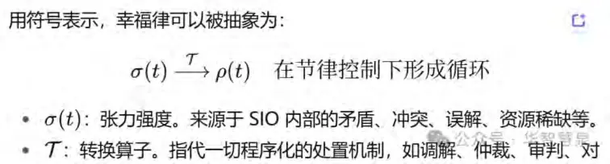
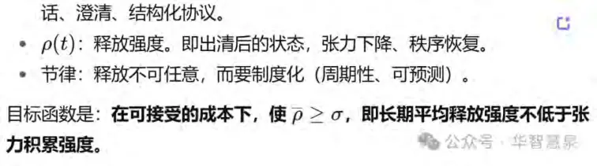

逻辑、道德、法律与语法的通用生成解构
摘要
本文提出一种普适性的理论框架，用于解释逻辑、道德、法律、语法等各种“法(law)”如何生成、演化并趋于稳定。核心观点是：所有的“法”都不是先天固化的规定，也不是随意制定的条款，而是一个个具体的 SIO（主体—互动—客体整体）在运行中，经历张力积累、程序化转换与节律化释放而逐渐收敛形成的。
这一过程可以用三条规律加以概括：
1. 幸福律（内核）：SIO 在运行中必然产生张力（冲突、误解、拥堵）。若张力没有出口，就会以更大代价反弹。幸福律要求 SIO 必须具备“张力—转换—释放”的循环机制，把张力导入可达、可问责的转换通道，并通过冷静期、复审、赦免等制度化阀门进行周期性释放，从而维持系统的长期稳态。
2. 特征律（稳定机制）：当 SIO 的差异进入稳定窗（∣d(ΔSIO)/dt∣≤ε），就会涌现“同一性”——即明确的范畴、定义和判据。这些特征为规则提供“看得懂、用得准、能复查”的基础，使之具备可预测性与复用性。
3. 自由律（调节机制）：环境不断变化，SIO 若缺乏弹性就会僵化。自由律强调在稳窗范围内，扩展可选空间、降低切换成本。通过等效合规路径、例外条款、受控试点与日落复审，SIO 可以在不破坏稳定的条件下，适应差异与创新。
基于这三律，本文将“法”重新定义为：以幸福律为内核的三律运行，在不同 SIO 的张力循环中实现动态调节与最终收敛，形成逻辑、道德、法律、语法等多样规则的共同结构。换言之，法是三律在“连接—次序—结构”三个场模态上的工程化管控：
连接：SIO 与 SIO 之间的通道是否可达、是否能问责；
次序：SIO 的运行先后与节律，是否能避免积压与拥堵；
结构：多个 SIO 如何分层、多轨并行，如何防止死锁与失衡。
为了让模型可度量、可操作，本文提出“指标—阈值—动作”的闭环：以稳定度、自由度、张力强度、释放效果、运行成本为五个关键指标，并设计触发动作规则：当稳定度不足则“加稳”，自由度过窄则“放宽”，张力过高则“开阀门”，运行偏离稳窗则“回滚”。这一设计使“法”的调整进入可检验、可调参的轨道。
为了避免过度抽象，本文配合日常类比与现实案例进行说明。幸福律好比城市的“排水系统”，不排则涝；特征律如“家电说明书”，减少误解与返工；自由律像“关节活动”，既要稳定又需灵活。在现实层面，一个沟通 SIO 可通过“标题三段法、责任绑定”降低歧义；一个城市治理 SIO 通过“夜间施工限时、多轨投诉通道、季度复审”减少投诉；一个医院排班 SIO 借助“积分换班+季度清账”消解积怨；而司法系统作为庞大的 SIO 网络，则通过“调解/仲裁/诉讼/速裁并行+赦免复审”平衡张力与秩序。
最后，本文也对传统“先天法学”命题进行了重述。康德的“可普遍化原则”可以被理解为“单位张力处置成本最低的 SIO 模式在长期互动中被稳定选留”；乔姆斯基的“普遍语法”更接近于语言 SIO 在记忆与带宽约束下的“共同收敛核”；“良心”与“心学”则可以看作社会—经验—反思三相位中，SIO 经长期节律化生成的规范直觉。
综上，本文提出的三律发生学模型通过“抽象原理—日常类比—现实案例”的三合一表达，为逻辑、道德、法律、语法等“万法”提供了统一的生成解释框架。它表明：以幸福律为内核，特征律提供稳定基线，自由律负责动态调节；通过连接—次序—结构的场模态，配合指标—阈值—动作的闭环机制，规则得以生成、运行并稳定收敛，由此实现万法归一。
引言
一、研究背景：为什么我们要重新谈“法”
在人类文明史中，“法”的概念从来不是单一的。古希腊哲学家们强调逻各斯（logos），即万物秩序的普遍理性；罗马时代确立了法律作为帝国治理的支柱；中世纪以来，道德律与神律成为社会规范的核心；近现代语言学则提出了“普遍语法”的设想，试图说明语言的深层结构如何约束一切表达。可以说，无论是逻辑、道德、法律，还是语法，人类文明的每一条主干都建构在某种“法”的理解之上。
然而，这些“法”常常被假定为先天存在或超越经验的本体。康德在《实践理性批判》中谈到“道德律”时，认为它是“能够普遍化的原则”；乔姆斯基在语言学中提出“普遍语法”，认为它内嵌在人的认知系统之中；儒家思想中的“良知”，王阳明的“心即理”，也强调某种内在自足的“天理”。这些观点都具有解释力和启发性，但却有一个共同的困境：它们难以解释变异、动态与多样性。
如果道德律是“先天”的，为什么不同文明会形成差异巨大的伦理习俗？
如果语法是“普遍”的，为什么世界语言体系既有共同点，又存在无法统一的独特性？如果法律是“自然的”，为什么法律条文与制度设计随着时代不断修订？
传统的“发现论”视角往往把这些问题归结为“偏差”“不完善”，而忽视了一个事实：规则本身是在互动中生成的，是动态收敛的结果。
二、问题提出：为什么要谈“法的发生学”
“发生学”的核心问题是：不把“法”看作已经在那里、等待被发现的存在，而是把它看作在具体运行过程中生成的结果。
逻辑并不是抽象天空中的永恒法则，而是学者在争论、推理与论证中，为减少歧义与矛盾而逐渐形成的收敛。
道德并不是先天镌刻在心灵深处的律令，而是在社会互动中通过张力的处理、责任的分担与情感的调节逐渐沉淀的准则。
法律并不是超验的正义映射，而是社会在资源有限、冲突频发的情境中，通过制度化的裁决与再平衡而不断生成的。
语法也并不是固定的认知清单，而是人类在长期沟通中，为降低歧义与提高效率而收敛出来的一套稳定规则。
换句话说，“法”的发生学是对“规则生成机制”的系统揭示：为什么会出现规则、规则如何被维持、规则又如何在环境变化时被修正。
这一转向很重要，因为它避免了两种极端：
1. 先天主义的僵化：把规则视为绝对、不可变，结果解释不了差异与演化；
2. 相对主义的虚无：把规则视为随意的权宜之计，结果缺乏稳定性与预测力。
“发生学”视角告诉我们：规则不是静态发现，而是动态生成；不是绝对固定，而是相对收敛；不是完全随意，而是受制于内在的运行规律。
三、理论框架：以幸福律为内核的三律收敛
本文提出的三律发生学模型，正是回答“法如何生成并收敛”的理论框架。其要点在于：以幸福律为内核的三律运行，在不同的 SIO（主体—互动—客体整体）中形成调节机制，最终收敛为规则体系。
幸福律保证张力有出口，系统能够节律化地释放压力。
特征律保证差异在稳定窗内压缩，形成可识别的同一性。
自由律保证系统在稳窗范围内有弹性，能适应新情况。
三律并非分立，而是作为一个整体运行：幸福律是内核，特征律是基线，自由律是调节器。它们共同作用于 SIO 的运行，使“法”的生成既有必然性，也有灵活性。
四、研究意义：为什么需要“通用模型”
我们之所以需要一个“通用模型”，是因为逻辑、道德、法律与语法虽然领域各异，但它们的生成机制高度相似：
1. 都有张力来源：逻辑中的矛盾，道德中的冲突，法律中的纠纷，语法中的歧义。
2. 都有转换机制：逻辑中的澄清与论证，道德中的劝导与补偿，法律中的调解与审判，语法中的结构化与显性标记。
3. 都有释放阀门：逻辑中的“最终收口”，道德中的“宽恕与修复”，法律中的“赦免与复审”，语法中的“变体与更新”。
4. 都需要稳定窗：避免无限分歧与混乱，保证最低程度的一致性。
5. 都需要自由度：给创新与个案留出空间，避免僵化。
正因如此，如果没有一个“通用生成模型”，我们就会在各自的学科里反复解决类似的问题，却缺乏一个统一的解释框架。而“万法归一”的意义就在于：把逻辑、道德、法律、语法这些看似不同的“法”纳入同一生成学视野，从而揭示其背后的普遍规律。
五、学术价值与实践价值
学术价值：
为“先天法学”提供新的解释路径，把康德的“可普遍化”、乔姆斯基的“普遍语法”、儒家“良心/心学”重新放入生成逻辑中解读，避免僵化与误读。
为法学、伦理学、逻辑学、语言学提供共同的分析工具，使跨学科的研究有统一的基础。
为知识论和本体论提供支持，说明“规则”的存在方式不是先验的，而是动态的、收敛的。
实践价值：
法律制度设计：通过“张力—转换—释放”的视角优化司法流程，减少尾部风险与积压。
道德伦理治理：通过稳窗与自由度的平衡，制定既有约束力又有适应性的伦理规范。逻辑与学术争论：通过相位化与阀门机制，避免争论陷入无休止的循环。
语言与沟通：通过结构化和等效合规，降低歧义，提升沟通效率。
六、核心回答
因此，本文的核心回答是：我们为什么要“法的发生学”？因为只有从生成的视角，才能同时解释稳定与变化、普遍与差异。我们为什么要“通用模型”？因为逻辑、道德、法律、语法等一切“法”的生成，本质上都是 SIO 在三律驱动下的收敛，只是表层形式各异。
----引言接着说----
七、历史困境与当代挑战
在人类文明的长河中，“法”的理解始终摇摆在两个极端之间：先天主义与相对主义。
先天主义的困境
从古希腊的“理性法则”，到康德的“道德律”，再到乔姆斯基的“普遍语法”，人们常常倾向于把“法”理解为先天存在、不可动摇的真理。这种看法带来了道德感与法律权威的基础，却也面临困境：它无法解释不同文明之间的差异，也难以说明规则为什么会随着历史变迁而修改。若规则真是先天的，为什么法律条文要不断修订？为什么伦理习俗因时因地而异？
相对主义的困境
与此相反，后现代哲学、文化相对主义和部分社会学传统则强调规则的偶然性与权宜性，把一切制度视为临时拼凑。这种观点揭示了权力与情境的重要性，但同样陷入困境：若一切规则都可随意更改，那么稳定性从何而来？公共信任如何维持？社会合作如何可能？
这两种极端的困境，使得当代社会面临“双重危机”：一方面是对“普遍法则”的质疑，一方面是对“全然相对”的恐惧。我们急需一种新的视角，既能解释规则的多样性与变化，又能保证规则的稳定性与收敛性。
三律发生学正是在这一背景下提出的：它既反对先天主义的僵化，也避免相对主义的虚无，而是把“法”看作在 SIO（主体—互动—客体整体）的运行中，借由幸福律、特征律、自由律的协同作用而生成的结果。这样，规则既有因果必然（收敛），又保留了灵活度（调节）。
八、普世意义之一：跨文明
不同文明对“法”的理解各不相同：
西方传统重视法律与逻辑，强调清晰、普遍、可裁判；
中华传统重视伦理与礼法，强调和谐、情境与关系；
印度与佛教文明则重视心性与超越，强调内在自由与觉悟。
这些文明的差异，往往被解释为“文化特性”。然而，从三律发生学的角度看，它们其实都是SIO 收敛的不同侧重：
西方文明更强调特征律，把规则的稳定性、可复用性放在首位；
中华文明更强调幸福律，注重张力的化解与社会和谐；
印度文明更强调自由律，强调个体与宇宙之间的精神调节。
换言之，三律并非某一文明的专利，而是普遍存在于所有 SIO 的运行逻辑之中。差异只是“收敛权重”的不同配置。通过这一视角，我们就能为文明间的交流找到一个共同语言，把差异转化为互补，而不是冲突。
九、普世意义之二：跨学科
在学术界，逻辑学、伦理学、法学、语言学长期各自为政，彼此之间缺少共同的解释框架。结果是：
逻辑学家研究“论证有效性”，伦理学家研究“行为正当性”，法学家研究“制度合法性”，语言学家研究“语法普遍性”。
四个学科都在回答同一类问题：规则从何而来？为什么有效？为什么可以被普遍遵循？
但由于缺乏“通用模型”，这些学科常常互不相通，甚至在根本假设上互相抵触。
三律发生学的提出，正好弥补了这一缺口。它提供了一个统一的发生学框架：无论是逻辑、道德、法律还是语法，本质上都是 SIO 在三律驱动下的收敛。这样，不同学科就可以在同一个坐标系里展开对话，既能看到差异，也能揭示共性。
十、普世意义之三：AI 时代与“AI法”
进入人工智能时代，旧有的“法”面临前所未有的挑战。AI 的生成能力、自治能力和跨界能力，使传统的规则体系捉襟见肘：
逻辑层面：AI 可以生成看似合理却逻辑跳步的结论，我们如何判断其“逻辑合规性”？道德层面：AI 在决策时可能涉及价值冲突（如无人驾驶中的生死抉择），我们如何建立“机器伦理”？
法律层面：AI 的行为责任难以追责，传统法律以“主体责任”为核心，而 AI 的“非人主体性”让法律框架陷入空白。
语法层面：AI 语言模型能创造出新的表达方式与语用模式，语法的“共同核”是否需要重新界定？
在这种背景下，人类必须提出一个新的问题：如何为 AI 建立“法”？
三律发生学提供了一个起点：
幸福律告诉我们，AI 系统必须有“张力出清机制”，不能让风险与冲突无限积累；
特征律告诉我们，AI 的运行必须在“稳定窗”内可被理解、可被验证，避免黑箱失控；自由律告诉我们，AI 法不能一味僵化，而必须留有调节空间，以适应技术演化与社会变化。
换句话说，AI 的“合法性”不应被先验地赋予，而应在 AI—人类—环境的 SIO 网络中，通过三律运行逐步收敛。这不仅是技术问题，更是人类文明在新阶段必须面对的根本挑战。
十一、总结：迈向“万法归一”的时代
综上所述，历史上的先天主义与相对主义困境，文明之间的差异，学科之间的割裂，以及 AI 时代的新挑战，都指向同一个需求：我们需要一种能够解释一切规则生成与收敛的通用模型。
三律发生学模型正是这种尝试：
它解释了“为什么规则会生长出来”；
它说明了“为什么规则能长期维持”；
它揭示了“为什么规则既能普遍又能多样”；
它还为未来 AI 时代的“新法”提供了设计起点。
因此，三律发生学不仅是一个哲学框架，也是一种实践方法论。它让我们明白：以幸福律为内核的三律运行，在 SIO 的张力循环中实现收敛，从而生成逻辑、道德、法律、语法以及未来的 AI 法。
第一编幸福律（法的内核）
第一章张力—转换—释放的循环之道
一、为什么“幸福律”是‘法’的内核
在三律发生学模型中，幸福律被定义为：任何一个 SIO（主体—互动—客体整体）在运行过程中必然会积累张力，而张力的存续必须通过转换与释放的节律化循环来维持系统的稳定与发展。
换句话说，张力是生命现象、社会现象和制度现象的“常态”，而不是“例外”。一切“法”的存在都首先是对张力的回应。无张力，无需‘法’。
如果张力无处可去，系统会崩溃；
如果张力处理失衡，系统会走向畸形；
只有当张力能被导入适当的通道，并在合适的时机与节律下释放，系统才能进入“低成本稳定”状态。
因此，幸福律既是“法”的发生动力，也是“法”的运行核心。它揭示了一个基本事实：没有张力就没有规则，而规则的首要使命是把张力转化为稳定的秩序。
二、抽象模型：Σ–T–R 循环
2.1 模型表达：


2.2 三个要点
1. 张力不可消灭，只能被转化与疏导。
2. 转换必须可达可问责，否则张力会“地下水化”。
3. 释放必须节律化，否则会积压爆发或失控泛滥。
三、日常类比：排水系统、压力锅与音乐
排水系统：城市下水道不是为了“杜绝下雨”，而是为了在雨水不可避免的前提下，把水导入管道，分流、沉淀、排放。如果入口堵塞、管道过窄或闸门失灵，积水必然内涝。社会张力也是如此。
压力锅：烹饪时必须要有排气阀，既能保持压力来加速熟化，又必须在合适时释放蒸汽，避免爆炸。规则体系的设计，本质上就是“阀门制度”。
音乐：乐曲的紧张与舒缓形成节律。一个只积累不释放的旋律会让人窒息；一个全是释放的旋律则会乏味。社会、语言与法律的运行，同样需要“张力—释放”的节奏。
四、现实案例分析
4.1 团队沟通的幸福律
在一个跨国项目团队里，沟通中常见的张力是歧义与责任不清。如果缺乏机制，邮件与群聊很快陷入混乱。
张力：任务不明确，反复问责，误解不断。
转换：引入“标题三段法 + 先结论后论据 + 显性 @责任人”的沟通协议。
释放：每周固定会议清理“待办堆积”，相当于“节律阀门”。
效果：往返轮次下降，误解率下降，团队满意度上升。
这里，幸福律的运行把沟通 SIO 从“混乱张力”转化为“稳定循环”。
4.2 城市治理的幸福律
某城市的夜间施工引发大量投诉。
张力：噪音扰民，投诉高企，执法负担沉重。
转换：政府出台制度：“22:00 后禁止高噪音工序”，并设立三轨投诉通道（热线、在线、街道速裁）。
释放：季度黑名单复审，集中处理积怨。
效果：三个月后，投诉量下降 40%，处置时长缩短一半。
这说明：只要把张力导入清晰的转换通道，并定期释放，社会系统就能低成本稳态运行。
4.3 司法制度的幸福律
在司法领域，幸福律更显得关键。
张力：社会矛盾与纠纷永远存在。
转换：调解、仲裁、诉讼、速裁、合议庭等多轨机制。
释放：赦免、破产重整、定期复审等“制度化阀门”。
效果：既维持法律的权威与稳定，又避免社会冲突无限积累。
如果缺乏“释放阀门”，法律体系就会僵化，甚至激化矛盾。幸福律在此提醒我们：司法不只是“惩罚”，更是“循环出清”。
五、幸福律的工具化设计
为了在制度设计中贯彻幸福律，我们提出以下工具表：
5.1 转换机制库
调解、仲裁、诉讼、速裁
申诉、复核、同行评议
结构化沟通协议、显性责任绑定
5.2 释放阀门库
时间阀门：冷静期、日落条款、定期复审
程序阀门：赦免、重整、勘误
情绪阀门：公众听证、反馈日、民调
5.3 指标监控
张力强度 σ：投诉量、拥堵峰值、矛盾案例数
转换效率 η：处理周期、错误率
释放效果 ρ：复发率、满意度
六、幸福律与“幸福”的哲学意涵
为什么称之为“幸福律”？
在个体层面，幸福往往不是“无张力”，而是张力被妥善释放时的轻松与满足。
在社会层面，幸福不是“无冲突”，而是冲突能有序化解时的和谐与稳定。
在文明层面，幸福不是“无差异”，而是差异在收敛中并存时的繁荣与创造。
因此，“幸福律”既是技术性的运行规律，也是人类追求幸福的深层哲学表达。
七、小结
幸福律揭示了规则的首要使命：保证张力能够进入可达的转换通道，并在节律化的释放中维持稳定收敛。
它既能用抽象模型描述（Σ–T–R 循环），也能通过日常类比理解（排水、压力锅、音乐），更能在现实案例中验证（沟通、治理、司法）。在通用模型中，幸福律作为内核，为特征律与自由律提供了运作前提。
第一章接着说：幸福律的跨文明与 AI 法意义
一、跨文明的幸福律：不同收敛、同一逻辑
幸福律的基本命题是：一切 SIO 都不可避免地产生张力，而张力必须通过可达、可问责的转换程序，并在节律化的阀门中释放，才能维持系统长期稳定。这一逻辑具有普遍性，但在不同文明中表现出的“收敛形态”各不相同。
1.1 西方文明：特征律主导下的幸福律
西方文明的法学与逻辑传统强调清晰、普遍、可裁判，往往把张力的“释放”收敛到形式化的制度中。
例子：罗马法典、近现代宪法与成文法体系，把社会张力纳入文字化、条文化的通道中。
幸福律的特征：张力释放必须通过司法程序化、契约化，即“形式之门”。
优点：稳定性与可预测性极高；
缺点：转换与释放成本较高，往往导致“程序正义”优先于“实质和解”。
1.2 中华文明：幸福律的和合取向
中华文明长期强调“和而不同”。这里的幸福律表现为张力的柔性转化。
例子：宗族调解、乡约、礼治，以关系网络和道德权威作为张力的释放阀门。
幸福律的特征：重在“化解”，而不是“裁断”。
优点：转换成本低、社会整合度高；
缺点：缺乏明确的制度保障，容易流于人情化、模糊性。
1.3 印度与佛教文明：自由律偏重下的幸福律
印度与佛教文明则更强调内心张力的超越与释放。
例子：冥想、业力观、出离苦海。张力不是被社会制度收敛，而是被精神修炼内化为“觉悟”。
幸福律的特征：释放阀门是“个体精神实践”，而非社会制度。
优点：具有深层的精神安定力；
缺点：张力处理往往停留在个体层面，社会制度层面的收敛不足。
1.4 跨文明的整合
三种文明模式揭示：幸福律是普遍的，但收敛的权重不同：
西方强调特征律的刚性收敛；
中华强调幸福律的柔性释放；
印度强调自由律的内在调节。
三律并未被否认，而是在不同文明中配置了不同的“主旋律”。这表明幸福律不仅是一种运行规律，更是理解文明多样性的钥匙。
二、AI 时代的幸福律：建立“AI 法”的必要性
随着人工智能的快速发展，人类面临一个前所未有的难题：如何让 AI 融入人类规则体系，并为其建立“AI 法”？
2.1 AI 的张力来源
AI 并非中性的工具，它在运行中必然制造新的张力：
逻辑张力：大模型生成的推理可能跳步或含有自洽性缺陷；
伦理张力：AI 决策涉及生命、利益的冲突（如无人车事故选择问题）；
法律张力：责任主体模糊，现有法律难以追责“非人主体”；
语法张力：AI 语言创造新模式，可能破坏既有的沟通稳定性。
2.2 幸福律的 AI 法设计原则
要建立 AI 法，就必须以幸福律为内核：
1. 张力必然性：承认 AI 的运行一定会产生张力，而非幻想“零风险”。
2. 转换机制：为 AI 行为设置“程序化处置通道”，如算法透明审计、责任回溯系统。
3. 释放阀门：制度化的“冷静期、复审、停机重启”机制，防止风险积累。
4. 节律化原则：AI 法的审查与更新必须有固定周期，不能仅在事故后被动调整。
2.3 AI 法的三层结构
连接层：AI 与人类、环境的接口必须可追踪（如日志系统、责任标记）。
次序层：AI 的运行须有优先级设定（如“人类安全优先”），避免张力积压。
结构层：多轨治理（人类监管、算法自审、第三方独立审计），防止单一失灵。
2.4 幸福律的价值
它能让我们避免两种幻觉：
1. 技术万能主义：认为 AI 完美无缺，不需规则；
2. 技术恐惧主义：认为 AI 注定失控，只能禁止。
它指出一条中道：AI 张力可控，只要有制度化转换与节律化释放。
三、跨文明与 AI 的交汇：全球化的张力
AI 法的建立，还面临跨文明的挑战。
西方倾向于以“法律文本+技术审计”作为主要转换机制；
中华文化可能更强调“AI 应用的社会和谐与伦理底线”；
印度传统可能提出“AI 的精神与自由维度”。
如果没有幸福律的通用模型，这些差异可能导致冲突；有了幸福律，就能把不同文明的权重差异转化为互补：
西方提供制度的刚性框架，
中华提供伦理的柔性调节，
印度提供自由的超越视角。
AI 法的未来正需要这种“跨文明收敛”，才能成为人类共同的规则体系。
四、总结
幸福律揭示了规则生成的普遍逻辑：张力不可避免，但必须有出口；出口不可随意，而要制度化；制度不可僵化，而要有节律。
在文明层面，它帮助我们理解东西方与印度三大传统的差异与互补。
在技术层面，它为 AI 时代的“新法”提供了构建原则：张力预期、转换机制、节律释放。
在未来层面，它为“跨文明 AI 法”提供了共通语言，避免陷入割裂与冲突。
因此，幸福律不仅是三律发生学的内核，更是文明走向融合、AI 法走向成熟的关键所在。
第二章特征律：稳定机制与同一性的生成
一、特征律的定位：为什么“稳定”是规则生成的基线
在三律发生学中，幸福律负责保证张力能够被导入通道并节律化释放；自由律保证系统能在稳定框架下保持灵活度与创新空间。而特征律，则是三律中的基线机制——它回答了一个根本问题：我们凭什么说“这就是同一个东西”？规则的稳定性从何而来？
如果没有特征律，SIO（主体—互动—客体整体）的差异会处于混乱状态，任何东西都可能被误解、错配或瞬息万变；知识、法律、道德、语法都将无法建立。
因此，特征律是所有“法”的起点。它的使命在于：把流动的差异压缩进“稳定窗”，在意识中涌现同一性，从而为规则提供可理解、可预测、可复用的基线。
二、抽象模型：差异—稳定—同一性
2.1 差异是起点
SIO 的运行必然产生差异（ΔSIO），例如：
两次实验结果不同；
两个行为选择带来不同后果；
两个语句表达出不同含义。
没有差异，就没有特征。差异是“特征之母”。
2.2 稳定窗的出现
当差异的变化率进入一定区间：
∣d(ΔSIO)/dt∣≤ε|
系统不再剧烈波动，而是进入“慢变量”阶段。此时，差异虽然存在，但在一定范围内保持稳定。
2.3 同一性的涌现
在稳窗内，意识会自然地产生“这是同一个东西”的直觉，这就是特征。
在逻辑中，特征表现为定义与判据；
在道德中，特征表现为是非善恶的直观；
在法律中，特征表现为可归类的条款与罪名；
在语法中，特征表现为反复使用的语序与结构。
2.4 抽象公式
ΔSIO →稳定窗自组织 Feature⇒同一性投影
特征并不是客体的固有属性，而是 SIO 整体在稳定窗中的投影。
三、日常类比：说明书、交通灯与考试标准
说明书：没有说明书，家电的使用差异巨大；说明书把操作压缩进稳定窗，让人知道“这样就是正确的”。
交通灯：红灯停、绿灯行——它不是物理必然，而是差异被压缩后生成的社会特征。考试标准：一道题可能有多种思路，但“判分标准”把差异收敛为统一的结果，让教师与学生形成同一性理解。
这些例子表明，特征律的本质就是“差异收敛—同一性生成”。
四、现实案例分析
4.1 科学发现：牛顿与爱因斯坦
牛顿看到地面物体下落与天体运行的差异，经过收敛，提出“力”的特征，使两种现象被统一理解。
爱因斯坦把差异重新解释为“光速不变”，使新的稳窗生成，从而统一了空间与时间。科学不是“发现本质”，而是在差异中寻找稳定窗，生成新的特征。
4.2 法律案例：盗窃罪的界定
不同社会对“盗窃”的差异性理解（偷食物、偷信息、偷数字资产）。
法律必须通过“稳定判据”来归类：如“未经许可取得并非法占有他人财产”。
随着社会变化，判据也会调整，但其使命始终是把复杂差异收敛为同一性裁判。
4.3 教育案例：孩子学习“妈妈”
婴儿在哭声、喂奶、拥抱、声音等多种差异中，逐渐稳定出“妈妈”这一特征。
学习不是“发现妈妈的本质”，而是在差异中找到重复性，进入稳窗，生成同一性。
五、学术对话：颠覆三大误区
5.1 否认差异
巴门尼德式的“唯有同一”无法解释变化。特征律强调：没有差异，就没有特征。
5.2 固化差异
柏拉图、亚里士多德把特征当作永恒本质。特征律则认为：特征是生成的慢变量投影，不是永恒的本质。
5.3 虚无差异
尼采、德里达解构特征为幻象或权力效果。特征律的回应是：特征虽非本质，但有因果必然性，是 SIO 稳定性的结果，不是随意虚构。
六、特征律的工具化设计
1. 同一性判据表：定义—正例—反例—边界条件。
2. 相位化流程：分阶段锁定差异（提出→分解→验证→整合）。
3. 反死锁拓扑：在多轨道运行下设立“回退与超时机制”。
这些工具让特征律不仅是哲学命题，也能转化为治理、教育、科研的操作指南。
七、小结
特征律的使命是：把差异收敛为稳定窗，在意识中生成同一性。
它既解释了科学、法律、教育的知识生成过程，也揭示了文明与规则的稳定性来源。它既反驳了“先天本质”的误解，也避免了“虚无相对”的陷阱。
在三律法学通用模型中，以幸福律为法的内核，特征律为法的基线，自由律为法的调节器。幸福律保证张力能被释放，特征律保证规则能稳定收敛，自由律保证系统能随情境调整。三者共同作用，构成“万法归一”的发生学框架。
第二章接着说：
特征律的跨学科应用与 AI 时代的意义
一、特征律的跨学科应用
1.1 在教育中的应用：从死记硬背到差异稳定化
传统教育模式常常把“知识”当作固定条目，要求学生死记硬背。但特征律告诉我们，知识并不是外在的本体，而是学生在不断的互动中，逐渐把差异压缩进稳定窗，最终在意识中生成“同一性”的过程。
案例：孩子学会“圆”的概念，不是因为老师直接灌输定义，而是通过不断比较不同形状（圆形、椭圆、方形），逐渐稳定出“曲线均等距离”的特征。
应用启示：教育应当设计多样化的差异体验，引导学生进入稳窗，而不是直接给出僵化定义。好的教学不是“给答案”，而是“设计差异—稳定—同一性的生成场域”。
1.2 在科学中的应用：理论的更新与特征重构
科学史上的重大突破，本质上都是对特征的重新收敛。
牛顿的“力”统一了地面与天体现象，形成新的稳窗。
爱因斯坦的“光速不变”重构了时空的特征。
DNA 双螺旋结构的发现，也是将实验差异收敛为稳定形态的结果。
启示：科学进步不是“发现本质”，而是通过差异的反复试验，把新的稳窗固定下来，从而生成新的特征体系。
1.3 在技术中的应用：从蒸汽机到 AI
蒸汽机：经历了无数爆炸与失败，工程师们逐渐找到压力、温度与阀门之间的稳窗，形成了“安全运转”的特征。
电磁统一：法拉第与麦克斯韦通过实验与方程，将电与磁的差异收敛为电磁场的稳定模式。
现代 AI：机器学习中的“特征提取”，恰恰是统计意义上的“差异稳定化”。一个分类模型之所以能识别猫，不是因为猫有先天定义，而是因为系统找到了足够稳定的差异模式。
1.4 在社会治理中的应用：共识的生成
法律：不同案件之间有差异，法律通过条款与判例，把这些差异收敛为“同一性”裁判标准。
伦理：不同情境中的道德冲突，通过反复辩论、公共舆论、文化传统的磨合，形成“普遍可接受”的特征。
政治：共识的形成并不是“真理发现”，而是意见差异在稳窗中被压缩，最终涌现出新的“制度特征”。
二、特征律在 AI 时代的意义
2.1 AI 的“特征化”本质
当代 AI，特别是深度学习，其运行机制正是大规模的“特征律”实践。
数据差异：大量样本中的噪声与变异。
稳定化：通过迭代训练，使权重逐步收敛，形成稳定的模式。
同一性：AI 输出的分类或生成内容，就是差异被锁定后在系统中的“特征投影”。
换言之，AI 的学习并不是“发现本质”，而是以特征律为核心，在差异中寻找稳定窗。
2.2 AI 的张力与特征律的风险
然而，AI 的特征律运行也面临张力：
稳窗幻觉：AI 可能在“假稳定窗”中锁定错误模式（偏见、虚假相关性）。
过拟合：特征律被推到极端时，差异被“收缩得过头”，失去普适性。
解释性不足：人类很难理解 AI 的稳窗机制，导致黑箱问题。
2.3 特征律在 AI 法中的意义
要建立 AI 法，必须将特征律转化为制度化原则：
1. 透明性：AI 系统的稳窗形成机制必须公开或可追溯。
2. 稳窗监测：需要监控 AI 的稳定性是否落在合适区间，避免“假稳定”。
3. 可修复性：一旦特征收敛错误，必须允许回滚与再训练。
4. 跨系统一致性：确保不同 AI 系统在关键稳窗上能够对齐，避免“碎片化真相”。
2.4 AI 作为“特征律实验场”
AI 不仅是应用对象，更是验证特征律的最佳实验室。它展示了：
知识的生成是差异收敛的产物；
规则的稳定是慢变量投影的结果；
同一性不是本质，而是 SIO 稳态下的意识映射。
三、特征律的文明价值
特征律不仅是学术命题，也有深远的文明意义：
它提供了一种超越本质论与虚无主义的路径，让我们既能承认差异的丰富性，又能解释收敛的必然性。
它让我们看到教育、科学、法律、AI 等领域的共同点，为跨学科研究提供统一语言。它为跨文明交流提供框架：不同文化的特征不再被看作对立，而是差异在各自稳窗中的投影。
四、总结
“第二章接着说”的主旨在于：特征律不仅是哲学的屠龙刀，更是跨学科的桥梁与 AI 时代的钥匙。
在教育中，它告诉我们“学习是差异收敛”；
在科学中，它说明“理论是新特征的稳定化”；
在技术中，它解释“创新是新稳窗的发现”；
在治理中，它揭示“共识是社会差异的收敛”；
在 AI 中，它提醒我们“智能的本质是特征律的程序化运行”。
因此，在三律法学通用模型里，特征律不仅提供规则的稳定基线，更是人类与 AI 共同进入未来文明的桥梁。
第三章自由律：调节机制与创造性空间
一、自由律的核心定位
在三律发生学框架中，幸福律保证张力得到节律化释放，特征律保证差异收敛为同一性。而若无自由律，规则体系将趋于僵化，失去应对新情境、接纳创新的能力。
自由律的使命在于：在不破坏稳定性的前提下，扩展 SIO 的可选空间，降低切换成本，使系统在张力不断生成与特征持续收敛的背景下，始终保持灵活与创造性。
换句话说，自由律就是规则运行的“调节器”和“创新开关”。它回答了一个根本问题：规则如何在稳定与变化之间找到平衡？
二、抽象模型：纠缠—选择—激发
自由律的运行并非凭空，而是一个清晰的三步发生过程：
2.1 纠缠（Entanglement）
定义：建立 ΔSIO 之间的连续性，即一个 SIO 的差异变化可以牵动另一个 SIO 的差异变化。
特征：需要经验积累与训练成本。
作用：为未来的自由提供潜在路径。
例如，乒乓球新手必须通过反复练习，把“旋转球—击球方式”建立纠缠网络，才能逐渐形成多样化的应对。
2.2 选择（Selection）
定义：在实际运行中，从已建立的纠缠网络中选取合适的差异路径应对情境。
特征：选择度取决于纠缠阶段积累的多样性。
作用：把潜在自由转化为现实决策。
例如，面对旋转球，球员可选择拉球、搓球或击打，这就是自由度的表现。
2.3 激发（Activation）
定义：被选择的差异路径在互动中被再现，完成一次实际应对。
特征：时效性强，必须在合适时机触发。
作用：把自由具体化为行动，并反过来修正纠缠网络。
例如，球员在赛场上实际完成一次“搓球回击”，这就是自由的激发。
2.4 总结
自由律三步闭环：
纠缠 → 建立潜在自由；
选择 → 现实中挑选路径；
激发 → 再现并行动。
自由不是形而上意志，而是 SIO 网络在三步运行中的生成性属性。
三、日常类比
语言学习：纠缠 = 背单词和句型；选择 = 在场景中挑选表达；激发 = 真实说出口。开车：纠缠 = 掌握刹车/油门/转向的协调；选择 = 突发情况下挑路径；激发 = 执行具体操作。
音乐即兴演奏：纠缠 = 长期积累和弦与旋律句法；选择 = 演奏现场判断气氛；激发= 弹奏出来。
这些例子显示，自由总是“被训练出的潜能”，而不是“天生具备的绝对权利”。
四、现实案例
4.1 教育中的自由律
张力：单一考试模式导致学习压力与不适配。
自由律：允许论文、项目、考试等多轨合格，只要满足核心判据。
结果：学生的学习动机增强，教育公平度提高。
4.2 法律中的自由律
张力：新兴事物（数字资产、基因编辑）挑战旧法律。
自由律：采用“功能等效原则”，只要满足核心标准，允许不同路径合规。
结果：既促进创新，又保持秩序。
4.3 治理中的自由律
张力：医院排班长期加班。
自由律：引入积分换班制，允许多路径换班，但需定期清账。
结果：矛盾缓解，团队满意度上升。
4.4 AI 治理中的自由律
张力：AI 黑箱运行带来伦理风险。
自由律：设立透明性判据，允许不同算法路径，只要可解释、可追责即可。
结果：创新与合规并行。
五、学术对话
5.1 对康德
康德的自由是“理性意志的自律”，但忽略了“纠缠—选择—激发”的生成过程。自由律指出，自由不是先验赋予，而是训练与互动积累的结果。
5.2 对法律实证主义
实证主义把法律看作唯一条文。自由律则强调：必须保留等效合规路径，否则创新被压制。
5.3 对后现代相对主义
后现代主义认为规则皆可解构。自由律提醒：自由必须在稳窗范围内运行，超出就会失控。真正的自由是“有边界的灵活度”。
六、工具化设计
1. 等效合规表：明确核心判据，允许多路径。
2. 日落机制：新规则必须定期复审，避免无限膨胀。
3. 回滚机制：一旦自由度过度，允许回到前一稳窗。
4. 阈值监控：设定自由度上限和下限。
这些工具让自由律不仅是哲学命题，更能转化为制度设计的操作框架。
七、自由律与创造性
一切创造性活动，本质上都是自由律的运行：
科学突破：跨越旧稳窗，建立新稳窗。
艺术创作：在规则框架内的自由即兴。
社会改革：在秩序内开辟新路径。
自由律揭示：创造不是混乱，而是边界内的灵活调节。
八、结论
自由律表明：自由并非主体的先验意志，而是 SIO 网络在纠缠—选择—激发的三步循环中生成的属性。
它让规则避免僵化；
它为创新开辟空间；
它在学术、教育、法律、治理、AI 中普遍适用。
在三律通用模型中：幸福律定内核，特征律稳基线，自由律调幅度。三者合而为一，才使“万法归一”的收敛成为可能。
第三章接着说：自由律的跨文明比较与未来意义
一、跨文明的自由律视角
自由律的三步运行——纠缠、选择、激发——在不同文明中有着鲜明的文化偏重。这种差异并不意味着规律的否定，而是表明各文明在“自由的生成”中选择了不同的侧重点。
1.1 西方文明：选择的理性化
西方哲学传统强调理性选择（从苏格拉底、亚里士多德到康德），把“自由”理解为主体在理性裁决下的自律。
实际上，这正是自由律三步中“选择”环节的放大：一旦纠缠网络被视为理性秩序，选择就被解释为理性意志的抉择。
优势：清晰、普遍、形式化，能够通过逻辑与制度进行裁判。
局限：忽视了“纠缠的生成性”与“激发的情境性”，导致自由被抽象化。
1.2 中华文明：纠缠的关系化
儒家讲“礼”，道家讲“道”，都强调自由不是个人任性，而是关系网络中的调和。
这实际上突出的是“纠缠”阶段：人与人、人与自然、人与社会的差异被织入关系网络，形成互相制约的自由空间。
优势：强调和谐与动态平衡，避免个体自由与集体秩序的撕裂。
局限：选择与激发往往依赖情境，缺乏形式化与普遍性，容易流于模糊。
1.3 印度文明：激发的内在化
印度与佛教传统更强调“解脱”与“觉悟”，把自由理解为灵性的超越。
这突出的是“激发”环节：在冥想或修行中，个体不断激发出新的自我状态，从而获得精神上的自由。
优势：关注内在自由与精神世界的无限可能。
局限：忽视了制度性与外在自由的建构，容易导致自由局限在个体层面。
1.4 跨文明互补
因此，我们可以用自由律的三步框架来解释：
西方文明偏重“选择”，
中华文明偏重“纠缠”，
印度文明偏重“激发”。
它们并非彼此排斥，而是可以互补：真正的自由，必须同时包含 纠缠的生成性、选择的理性化、激发的创造性。
二、自由律在未来社会的应用
2.1 政治与制度
未来社会要想避免治理僵化，就必须制度化地引入自由律：
纠缠层面：通过多元参与、开放对话，建立制度纠缠网络；
选择层面：允许政策多轨运行，如不同地区探索差异化路径；
激发层面：及时把成功经验制度化，成为社会运行的新稳窗。
这样，治理不再是单一线性命令，而是“纠缠—选择—激发”的循环过程。
2.2 教育与人才
未来教育的核心，不是传授唯一答案，而是帮助学生建立广阔的纠缠网络：
让学生能在遇到问题时有多个应对路径（选择度高）；
并在实践中不断激发、再现新的知识结构。
这就是“自由教育”的本质：不只是自由表达，而是自由生成。
2.3 经济与创新
创新本质上就是自由律的运作：
纠缠：跨学科、跨产业的差异网络建立；
选择：从多种方案中挑选最优；
激发：落地为新产品、新制度、新模式。
因此，经济发展的自由度就是其创新能力的核心指标。
三、AI 时代的自由律：建立“人工智能自由”
人工智能的出现，使“自由”这一古老概念面临新的挑战。AI 的运行机制本身就符合自由律的三步：
纠缠：通过大数据训练，建立海量的差异网络；
选择：在推理过程中，根据概率或优化函数选择路径；
激发：生成输出文本、图像或行动。
3.1 AI 自由的张力
自由不足：如果训练数据单一，AI 的选择度很低，表现为“僵化”；
自由过度：如果无边界释放，AI 的生成可能失控，造成“幻觉”或风险。
3.2 AI 法中的自由律原则
纠缠责任：训练过程必须透明，确保差异网络的来源合法。
选择判据：推理机制必须可追溯，确保选择不是黑箱。
激发监管：输出必须受制于人类可控的阀门，防止激发结果突破稳窗。
3.3 人机共生的自由律
未来的 AI 自由并非取代人类自由，而是与人类的纠缠网络相互嵌合：
人类提供价值判据；
AI 提供路径扩展；
二者在激发阶段共同生成新的知识与制度。
四、总结：自由的未来走向
自由律揭示了：自由不是既定的意志，而是纠缠—选择—激发的生成性循环。
在文明比较中，它解释了西方、中华、印度的差异与互补；
在社会治理与教育中，它指出了避免僵化与激活创新的路径；
在 AI 时代，它为“人工智能自由”与“AI 法”的建立提供了清晰原则。
真正的自由，不是无限制的放纵，也不是僵化的规范，而是 在稳窗之内不断生成的新可能性。
总小结：三律的纠缠与共生
一、引言：为何要谈“三律的纠缠与共生”
前文我们分别论述了幸福律、特征律与自由律。每一条律在自身领域都有独立的逻辑：幸福律保证张力能够循环释放；特征律确保差异收敛为同一性；自由律为系统留出调节与创造空间。
然而，单独理解三律还不够。若孤立地看幸福律，它可能退化为“单纯排泄机制”；若孤立地看特征律，它可能陷入“僵硬的本质主义”；若孤立地看自由律，它可能蜕变为“放纵与混乱”。因此，只有在三律的互相预设、互为条件、互相纠缠的整体关系中，我们才能把握规则发生的真正逻辑。
这正是“总小结”的目的：说明三律并非三根平行线，而是彼此交织的生成网络，像自然生态中的共生系统一样，构成规则与文明得以长期存续的基础。
二、三律的互为条件
2.1 幸福律离不开特征律与自由律
如果没有特征律，张力无法被“命名”与“归类”，释放将无从谈起。
如果没有自由律，释放只能僵化执行，无法因情境变化而灵活调整。
→幸福律必须依托特征律的判据与自由律的调节，才能真正维持稳定循环。
2.2 特征律离不开幸福律与自由律
如果没有幸福律，差异的稳定窗无法定期清理，最终会堵塞或塌陷。
如果没有自由律，特征会变成死板定义，阻碍新的同一性生成。
→特征律必须借助幸福律保证“稳定的可持续”，借助自由律保证“稳定的可更新”。
2.3 自由律离不开幸福律与特征律
如果没有幸福律，自由会积累张力而走向放纵或失序。
如果没有特征律，自由就失去边界，变成虚无。
→自由律必须以幸福律为张力阀门、以特征律为稳窗框架，才能成为真正的“创造性自由”。
三、三律的纠缠：循环共鸣的三角形
我们可以把三律的关系抽象为一个动态三角形：
顶点一：幸福律 = 张力—转换—释放。
顶点二：特征律 = 差异—稳定—同一性。
顶点三：自由律 = 纠缠—选择—激发。
三角形不是静态图形，而是一个不断旋转的动力结构：
1. 张力的释放（幸福律）为新的差异稳定（特征律）创造条件；
2. 差异的稳定（特征律）为自由的选择（自由律）提供边界；
3. 自由的激发（自由律）又反过来制造新的张力，进入下一轮幸福律循环。
三律因此不是三段式，而是一个自维持的发生学循环。
四、跨学科统一意义
4.1 在逻辑
逻辑推理的稳定性（特征律）必须允许不同证明路径（自由律），并通过辩论和反驳释放张力（幸福律）。
4.2 在道德
伦理规范的同一性（特征律）必须为个案留有余地（自由律），并通过忏悔、宽恕、补偿释放矛盾（幸福律）。
4.3 在法律
条文判据（特征律）必须允许等效合规（自由律），并通过调解、赦免、复审释放社会张力（幸福律）。
4.4 在语法
语序与范畴的稳定（特征律）必须允许方言变体（自由律），并通过使用与变革缓解沟通误解（幸福律）。
由此可见，三律不仅解释“法”的生成，也解释一切规则系统的生命力。
五、跨文明比较
西方文明：偏重特征律（理性与定义），但在幸福律（冲突处理）和自由律（灵活性）上常显僵硬。
中华文明：偏重幸福律（和谐与调解），但容易忽视自由律的制度化。
印度文明：偏重自由律的精神激发，但在特征律的社会层面常显不足。
三律比较提供了一种普世框架：各文明其实是三律权重的不同组合。未来文明的整合，必须让三律达到均衡的“共生态”。
六、AI 时代的前瞻
人工智能的崛起，使三律的纠缠共生进入新的舞台。
幸福律：AI 的运行必然制造张力（偏见、错误、风险），需要定期“释放阀门”。
特征律：AI 必须在稳窗中形成可解释、可验证的同一性。
自由律：AI 必须拥有有限自由度，以多路径应对复杂环境，但不能超出可控边界。因此，未来“AI 法”的设计，也必须遵循三律共生逻辑：张力必释、稳定必建、自由必调。
七、结论：三律的共生智慧
三律并非三根平行法则，而是彼此纠缠、共生、互为条件的整体发生机制：
幸福律提供循环动力；
特征律提供稳定框架；
自由律提供创造空间。
三者合一，构成“规则的生命三角”。
它不仅解释了逻辑、道德、法律、语法等传统领域的规则生成，也为跨文明交流与 AI治理提供了统一语言。
因此，“三律的纠缠与共生”不是三律的尾声，而是它们的整体升华。
三律纠缠接着说：跨学科与跨文明
一、引言：为何必须跨学科与跨文明
三律的价值，不仅在于它为“法”的发生提供了统一模型，更在于它能穿透不同学科与文明的藩篱，揭示隐藏在多样制度与思想背后的共同逻辑。人类社会的复杂性，既体现在科学、教育、法律、伦理、语言的分化上，也体现在西方、中华、印度等文明的差异上。
要理解规则的整体发生，我们不能只停留在单一领域，而必须展开跨学科与跨文明的对话。在这个过程中，“三律的纠缠与共生”提供了基础框架：幸福律、特征律与自由律在不同领域与文明中表现各异，却始终在互动中互相预设、互相嵌合。
二、跨学科的三律共生
2.1 科学与技术
科学史上的重大突破，都离不开三律的循环。
幸福律：科学争论中的张力必须释放。例如，牛顿统一天体与地面力学之前，争论、矛盾与实验失败不断积累，最终通过“万有引力”释放张力。
特征律：差异在稳定窗中收敛为科学定律。光速不变就是爱因斯坦理论的稳窗。
自由律：科学创新必须突破旧模式，开辟新路径。没有自由律，科学只会僵化在既有理论框架中。
在技术发展中同样如此：蒸汽机、电磁统一、信息革命，无不体现了三律的互动。尤其在人工智能时代，三律更成为理解算法训练（纠缠）、模型选择（选择）、推理激发（激发）的钥匙。
2.2 教育与学习
教育的本质就是“差异的收敛与自由的生成”。
幸福律：学生在学习中必然会产生张力，如困惑、失败、焦虑，教育的作用是为张力找到转换与释放的通道。
特征律：知识的掌握是差异稳定化的过程，例如“圆”的概念不是天生的，而是学生在不同图形差异中收敛出的特征。
自由律：教育的目的不是死记硬背，而是建立纠缠网络，让学生能在未来面对新问题时有多种选择路径，并激发创造性。
因此，教育改革的关键在于：不能仅停留在“特征灌输”，也不能只满足“张力疏导”，而要真正贯彻“自由生成”的原则。
2.3 法律与治理
法律制度的生命力，源于三律的互动：
幸福律：矛盾与纠纷必须有制度化的出口，如调解、诉讼、复审。
特征律：法律条文必须提供可归类的判据，使差异收敛为同一性裁判。
自由律：法律必须容许等效合规，允许多路径达标，否则会扼杀创新。
现代治理更需要三律的共生：既要保证张力出清（社会稳定），又要保持判据稳定（制度权威），还要给社会留有创造空间（改革与试点）。
2.4 艺术与文化
艺术创作是三律共生的最佳体现：
幸福律：艺术家往往从内在冲突与社会张力中寻找灵感。
特征律：每个艺术流派都会形成独特风格与特征稳定性。
自由律：艺术的生命在于不断突破既有形式，创造新风格。
艺术史的演化，从古典到浪漫，从现代到后现代，正是三律循环的长链条。
三、跨文明的三律共生
3.1 西方文明：理性与制度的特征律倾向
西方文明的主线在于强调特征律：
在逻辑中，追求形式化与普遍判据；
在法律中，偏好成文法与契约化；
在科学中，强调明确定义与可验证性。
这种倾向保证了稳定性与可裁判性，但也常常使西方文明在“幸福律的柔性”与“自由律的灵活”上显得不足。危机时往往容易僵化。
3.2 中华文明：和合与调解的幸福律倾向
中华文明的核心强调幸福律：
在伦理中，注重“和而不同”，用礼法调解张力；
在治理中，重视和谐秩序与冲突化解；
在文化中，强调“天人合一”的张力出清。
这种倾向带来了稳定与韧性，但往往在特征律的形式化和自由律的制度化上不足，容易依赖人情关系与情境判断。
3.3 印度文明：灵性与超越的自由律倾向
印度与佛教传统则突出自由律：
在哲学中，强调个体精神的解脱；
在修行中，重视冥想与自我超越；
在宗教中，追求超越世俗规则的自由。
这种倾向保障了深刻的精神自由，但在社会制度层面缺乏特征律的稳定与幸福律的张力调节，容易陷入碎片化。
3.4 三大文明的互补
三大文明的差异，实际上是三律偏重的不同组合：
西方文明：特征律强 → 制度与科学理性突出；
中华文明：幸福律强 → 社会调解与伦理整合突出；
印度文明：自由律强 → 精神自由与宗教智慧突出。
未来的全球文明整合，必须实现三律的均衡共生：
借西方的特征律来保证稳定框架；
借中华的幸福律来保证柔性与和谐；
借印度的自由律来保证精神超越与创造性。
四、AI 时代的三律共生
人工智能是“三律共生”的全新试验场。
幸福律：AI 的偏见、错误与风险必须有释放机制（透明度、监管与停机阀门）。
特征律：AI 的模型必须在稳窗中形成可解释、可验证的特征。
自由律：AI 必须允许有限自由度，在合规边界内激发创造性，而不能完全僵化或失控。
在全球范围，AI 法的建立将迫使不同文明的三律偏好互相对接，形成一种前所未有的跨文明“规则共生”。
五、结论：三律共生的普世意义
跨学科与跨文明的对比表明：三律不是抽象哲学命题，而是人类一切规则体系的普遍生成机制。
跨学科：逻辑、科学、教育、法律、艺术都遵循三律；
跨文明：西方、中华、印度分别偏重特征、幸福、自由律。
因此，未来的文明发展，尤其是在 AI 时代，必须以“三律的纠缠与共生”为根本框架：没有幸福律，系统会积压矛盾而崩溃；
没有特征律，系统会失去稳定性与方向；
没有自由律，系统会丧失创造力与适应性。
三律的共生，是人类走向可持续文明的唯一可能。
第二编：法的发生学
编序
在第一编中，我们揭示了三律的普遍逻辑：幸福律、特征律、自由律互相纠缠，共生运行，构成存在与规则的基本发生框架。但如果只停留在抽象哲学层面，三律的意义仍然未能触及“制度性实践”的核心。人类社会赖以生存的，并不是抽象的哲理，而是被制度化、规范化的“法”。
法不仅仅是法律，它的形态遍布人类一切活动领域：思想活动中的逻辑之法，社会生活中的道德之法，政治治理中的法律之法，语言沟通中的语法之法。这些不同的“法”常常被各自的学科视为独立王国，甚至彼此割裂，难以沟通。然而，当我们引入三律发生学，就能看出它们背后的统一发生机制。
这一机制可以概括为：
内核：幸福律的运行。所有法的必然性，源于张力无法避免、必须转换、必须释放。没有幸福律，法就失去生命根源。
外显：三律运行在场模态中的管控。幸福律、特征律、自由律并行作用，外显为 连接、次序、结构 三种制度形态。连接保证矛盾出清，次序保证运行稳定，结构保证整体持续与创造。
因此，“法的通用模型”就是：以内核的幸福律为生命动力，以外显的场模态管控为形式表现，三律纠缠共生，生成一切法。
基于此通用模型，本编将进入四个具体领域，分别探讨道德、法律、逻辑、语法的发生学。这四章不是并列孤立的，而是“通用模型”的四种外化形态。每一章都将遵循相同写作方式：抽象模型 → 日常类比 → 现实案例 → 学术对话。这样，抽象理论与生活世界得以贯通，学理与实践得以结合。
第二编·第一章
法的通用模型：三律的整体运行逻辑
一、引言：从分裂的“诸法”到统一的“通用法”
在学术传统中，“法”一词被赋予多重含义。逻辑学家说“逻辑之法”，伦理学家谈“道德之法”，法学家研究“法律之法”，语言学家分析“语法之法”。这些“诸法”被各自学科割裂开来，形成了独立王国：逻辑学强调形式推理的必然性，道德学强调善恶判据的天理性，法学强调条文制度的规范性，语言学强调普遍语法的先天性。
问题在于，这种分裂导致了两种极端：
本质主义的幻觉：各领域自以为掌握了“先天、永恒的法则”。
相对主义的虚无：反对者则认为一切规则都是权力效果或社会构造，不存在普遍性。两种极端都失去了对“法的发生”这一过程的把握。事实上，逻辑、道德、法律、语法并不是各自孤立的“本质”，它们都来自同一个根源：主体—互动—客体（SIO）的运行在三律的作用下的收敛结果。
因此，我们需要一个通用模型，既能揭示“法”的动力根源，又能说明“法”的外显形式，从而统一不同学科中的“法”。这就是 法的通用模型。
二、内核：幸福律的运行
2.1 张力是法的起点
人与人、人与社会、人与自然之间的互动必然产生张力：冲突、矛盾、误解、利益对立。没有张力，就没有规则需求。
2.2 幸福律：张力—转换—释放
幸福律告诉我们，张力不能无限累积，必须找到通道转换与释放。
在逻辑中，矛盾的张力通过推理与论证被释放。
在道德中，罪责与内疚的张力通过忏悔、补偿、宽恕被释放。
在法律中，社会冲突通过诉讼、裁判、赦免被释放。
在语法中，歧义与误解通过语法规则和语境修复被释放。
2.3 幸福律的内核地位
因此，法的生命根源不在于“先天理性”或“自然天理”，而在于 幸福律的运行。没有张力出清，任何规则都会堵塞，社会和思维都会崩溃。幸福律就是一切法的内核。
三、外显：三律在场模态中的管控
如果说幸福律是内核，那么外显形态就是三律运行在“场模态”中的制度化结果。场模态有三：连接、次序、结构。它们是“法”可见的表现层。
3.1 连接：保证张力有通道
幸福律：让张力有释放渠道（诉讼、辩论、申诉）。
特征律：让连接有稳定判据（证据标准、逻辑推理形式）。
自由律：让连接有多样路径（调解、仲裁、替代性解决）。
→ 案例：法律中的诉讼与调解并行；语言中的句法与语境修复并行。
3.2 次序：保证运行有序
幸福律：保证张力出清的节奏（程序正义、审判流程）。
特征律：确立稳定次序（先后顺序、因果逻辑、道德优先级）。
自由律：在次序中提供灵活性（应急条款、破例、特殊裁量）。
→ 案例：法院审判程序（立案—审理—判决—上诉）；逻辑推理顺序（前提—推理—结论）。
3.3 结构：保证系统持久
幸福律：防止结构中张力积累而崩溃（上诉制度、法典修订）。
特征律：为结构提供框架与边界（宪法、逻辑三律、语法范畴）。
自由律：在结构内容许创新与替代（非经典逻辑、宪法修正、方言与修辞）。
→ 案例：法律体系的分层（宪法—刑法—民法）；语言系统的层级（词—句—篇）。
四、法的发生循环
法的通用模型可以用一个循环来表达：
1. 张力生成（矛盾不可避免）；
2. 幸福律出清（张力被引导释放）；
3. 特征律稳定（差异收敛为判据）；
4. 自由律调节（在判据内保留多路径）；
5. 场模态外显（连接—次序—结构形成制度）；
6. 新张力出现 → 回到第一步。
法因此是一个动态生成与演化的过程，而非静止本质。
五、法的通用模型的意义
5.1 学术统一性
逻辑、道德、法律、语法四大学科长期分裂，各自自诩“独立本质”。通用模型提供了一个统一框架，揭示它们的共同生成逻辑。
5.2 文明对话性
不同文明的规则体系虽差异巨大，但在“幸福律内核 + 三律外显”的逻辑下，都能找到共通点。例如：
西方法律强调条文与契约（特征律强）；
中华传统强调调解与和谐（幸福律强）；
印度传统强调解脱与超越（自由律强）。
→ 这些差异不过是三律权重的不同组合。
5.3 AI 时代的前瞻性
AI 治理是人类面临的新挑战。通用模型指出：
必须有张力阀门（幸福律：风险控制）；
必须有稳定判据（特征律：可解释性与透明度）；
必须有调节空间（自由律：创新与灵活）。
否则，AI 法要么僵化，要么失控。
六、结论
法的通用模型 = 内核（幸福律） + 外显（三律在场模态中的管控）。
内核解释了“法为什么必然存在”：因为张力必然，需要释放。
外显解释了“法如何呈现出来”：以连接、次序、结构三种场模态显现。
三律相互嵌合，构成一个动态循环，使“法”不仅能维持稳定，还能保持灵活与创造。有了这一模型，我们就能走向后续章节，具体展开 道德、法律、逻辑、语法的发生学，展示三律如何在不同领域中生成各自的规则形态。
第二编·第二章
道德/伦理发生学：善恶的生成与三律的共生
一、引言：为什么要从“发生学”看道德
在人类历史中，道德长期被理解为“天赋良知”“上帝律条”或“自然理性”。儒家说“人皆有恻隐之心”，康德说“道德律在我心中”，宗教传统认为善恶由神的命令界定。这些说法都暗示道德是一种先天法则，不依赖于互动而独立存在。
然而，经验事实却不断提醒我们：道德规范并非一成不变，而是随着社会、文化、技术的变迁而生成与演化的。例如，奴隶制度曾在古代合法，但在现代则被普遍视为不道德；同性婚姻在多数文明中曾长期被排斥，但如今在许多社会逐渐合法化并被道德认可。这些事实表明：道德不是永恒本质，而是互动生成。
因此，我们需要从 三律发生学 的角度来理解道德：
幸福律解释了善恶张力如何产生并必须被释放；
特征律解释了道德判据如何稳定为“善”与“恶”；
自由律解释了道德体系如何在情境中调节并保持创造性。
在此框架下，道德/伦理就不再是先天本质，而是 SIO 互动在三律运行下的收敛性成果。
二、幸福律：道德的张力与释放
2.1 善恶冲突的必然性
道德规范的最初动力来自张力：人类互动不可避免地产生利益冲突、情感矛盾、欲望对立。这种张力如果无法释放，就会破坏群体合作。
2.2 幸福律在道德中的运行
张力：内疚、羞耻、冲突、复仇心。
转换：社会通过仪式、规范、信仰把张力转换为可处理的形式。
释放：忏悔、惩罚、宽恕、补偿。
2.3 案例
基督教的忏悔制度：提供内心张力的出清通道，让罪责得到社会与宗教的释放。
儒家的“礼”：通过礼仪调节人际张力，使冲突不至于扩大。
现代心理咨询：通过心理疏导释放内在张力，帮助人恢复道德与情感平衡。
结论：道德规范的生命根源不是理念，而是张力出清的必然性。
三、特征律：善恶判据的稳定
3.1 差异收敛为善恶
当社会面对重复的张力冲突时，必然会形成稳定判据，把某些行为归入“善”，把另一些行为归入“恶”。这就是特征律的运行：差异被收敛为同一性。
3.2 善恶的形成机制
经验累积：通过集体记忆与习俗，把有益于群体的行为标记为“善”。
制度化：宗教律法、哲学教义、伦理准则把善恶固定下来。
普遍化：当某一社会形成稳窗，它就会宣称这些道德是普遍真理。
3.3 案例
杀戮的演化：原始社会可能容许部落内部斗争，但农业文明稳定后，“杀人”逐渐被普遍归类为“恶”。
孝道的稳定：在中国，孝道由家庭张力收敛为伦理稳定性，被固定为儒家核心。
康德的道德律令：试图把善恶的判据稳定为理性的普遍法则。
结论：善恶不是先天本质，而是特征律在历史互动中收敛出的稳定结果。
四、自由律：情境调节与道德创造
4.1 自由律的必要性
如果只有幸福律与特征律，道德将陷入两个极端：
只剩幸福律 → 道德变成情绪化的出清，没有稳定性；
只剩特征律 → 道德僵化，无法应对新情境。
自由律正是调节器：在稳窗之内提供多路径，保证道德的弹性。
4.2 自由律在道德中的表现
纠缠：社会累积多种道德应对方式（法律惩罚、宗教忏悔、社会舆论）。
选择：在具体情境中挑选合适的应对方式。
激发：把选择的路径真实执行出来（赦免、惩罚、和解）。
4.3 案例
司法宽容：在稳定的善恶判据下，允许根据具体情境减轻处罚。
伦理难题：电车难题中的不同选择正是自由律的体现。
宽恕与和解：南非的“真相与和解委员会”允许在正义与宽容之间选择不同路径。
结论：自由律使道德保持创造性，能够应对新张力而不至于崩溃。
五、跨文明的道德发生学
5.1 西方传统
偏重特征律：强调普遍律条（十诫、康德的普遍化原则）。
优势：判据清晰。
局限：缺乏灵活性，常陷入僵化。
5.2 中华传统
偏重幸福律：强调和谐、调解、礼仪。
优势：能消解冲突，维持群体秩序。
局限：判据模糊，容易随情境而摇摆。
5.3 印度传统
偏重自由律：强调修行与解脱，把道德与精神自由结合。
优势：关注内在自由。
局限：缺乏社会制度化的稳定。
综合：三大文明只是三律权重的不同组合。真正的普遍道德必须建立在三律共生上。
六、AI 时代的道德挑战
人工智能的发展提出了新的伦理问题：
幸福律：AI 决策中的冲突（隐私、偏见、责任）必须有释放机制。
特征律：AI 伦理判据必须稳定（透明性、可解释性）。
自由律：AI 必须具备多路径选择，避免僵化或失控。
例如，无人驾驶遇到交通事故的选择，不可能依赖单一规则，而必须在张力释放、判据稳定、自由调节之间找到平衡。
七、结论：道德的发生学逻辑
综上，道德/伦理并不是先天的或永恒的，而是：
1. 幸福律：提供生命动力，处理冲突张力。
2. 特征律：提供稳定判据，生成善恶归类。
3. 自由律：提供情境调节，激发创造性。
三律纠缠共生，才构成了道德体系的发生学逻辑。
因此，真正的道德哲学必须超越“天赋良知”或“社会建构”的二元论，转向三律发生学的整体模型。只有这样，我们才能理解道德规范的生成、演化与未来可能性。
第二编·第三章
法律发生学：制度的生成与三律的共生
一、引言：法律的双重幻觉
法律在人类社会中的地位极为特殊。它既是“秩序”的象征，又是“正义”的保障。传统法学理论往往陷入两种幻觉：
1. 自然法幻觉：认为法律是客观正义的映射，独立于社会经验而先天存在。古希腊的“自然正义”、中世纪的“神法”、启蒙时期的“自然权利”都体现了这一倾向。
2. 实证法幻觉：认为法律就是国家制定的条文，与道德、正义无关。只要有权威机构发布、强制执行，就构成法律。
这两种幻觉分别强调“超验性”与“工具性”，但都忽视了法律本身的发生学逻辑。法律并不是先天真理，也不仅是权力的命令，而是社会 SIO 互动中经由三律运行逐步收敛出来的规范体系。
二、幸福律：法律的生命内核
2.1 法律源于张力
人与人之间的冲突不可避免：资源争夺、权利冲突、情感矛盾。没有冲突，就不需要法律。
2.2 法律的张力释放机制
诉讼与审判：提供制度化的冲突出口。
调解与仲裁：在对立双方之间建立转换通道。
赦免与特赦：在特定历史条件下化解积压矛盾。
2.3 案例
古代血亲复仇：当没有法律时，张力只能通过报复释放，导致恶性循环。
汉代的“春秋决狱”：以礼解释律，为张力释放提供柔性通道。
现代宪法法院：解决重大宪法冲突，防止社会矛盾积压爆炸。
结论：幸福律是法律的生命内核，若无法律张力通道，社会必然走向混乱或崩溃。
三、特征律：法律的稳定判据
3.1 从差异到同一性
在张力频繁出现的社会中，必须形成稳定判据，把行为清晰地分为“合法”与“非法”。这就是特征律在法律中的表现：差异被收敛为法律条文与制度。
3.2 法律的稳定化过程
习惯法阶段：通过重复实践，逐渐形成稳定的判据。
成文法阶段：通过立法机关把判据固定为条文。
判例法阶段：通过司法解释与判例积累，把差异固定为同一性结果。
3.3 案例
罗马法：把零散习惯法系统化，奠定西方法律的特征稳定性。
普通法体系：通过判例逐步积累稳定判据。
中国古代礼法合一：用“礼”补足“律”，维持社会的特征稳定。
结论：特征律赋予法律稳定性，使其能在差异纷繁的社会中提供可预期的秩序。
四、自由律：法律的调节与创新
4.1 自由律的必要性
若只有幸福律与特征律，法律将出现两个极端：
只有幸福律 → 法律变成随意的矛盾释放，无稳定性。
只有特征律 → 法律僵化，无法适应新情境。
4.2 自由律在法律中的表现
纠缠：制度建立多种路径（诉讼、仲裁、和解）。
选择：法官或社会在情境中选择合适的路径。
激发：把选择落实为真实裁决或政策。
4.3 案例
自由裁量权：允许法官在特定情境下根据具体情况调整判决。
等效合规原则：不同路径只要满足核心标准，就都合法。
日落条款：新法律必须定期复审，避免无限制积累。
结论：自由律保证法律具有弹性，能在变化环境中保持活力。
五、跨文明法律发生学
5.1 西方法律
偏重 特征律：强调成文法与契约精神。
优势：判据清晰，制度可预期。
局限：在社会快速变化时容易僵化。
5.2 中华法律
偏重 幸福律：强调礼治与调解，注重张力出清。
优势：柔性高，能化解冲突。
局限：判据模糊，容易随情境而变化。
5.3 印度法律
偏重 自由律：强调精神解脱与宗教律法，具有高度多样性。
优势：包容性强。
局限：缺乏稳定统一的制度化。
结论：三大文明的法律体系只是三律不同权重的组合，真正的普遍法律必须在三律的共生中建立。
六、AI 时代的法律挑战
人工智能的发展提出了前所未有的法律问题：
幸福律：AI 引发的新冲突（数据隐私、算法歧视、责任归属）必须有制度化的张力出口。
特征律：AI 法律判据必须稳定（透明性、可追责性）。
自由律：AI 法规必须容许创新（沙盒机制、实验性政策），同时可控。
例如，无人驾驶汽车发生事故，责任如何划分？必须在三律的循环中寻找答案：先处理张力（幸福律），再确立判据（特征律），最后允许多样路径（自由律）。
七、结论：法律的发生学逻辑
法律不是自然的，也不是单纯的条文，而是：
1. 幸福律：法律的生命动力，提供张力释放通道。
2. 特征律：法律的稳定基线，确立合法与非法的同一性。
3. 自由律：法律的调节机制，保证制度的弹性与创造性。
三律的纠缠共生，构成了法律体系的发生学逻辑。真正的法律哲学必须超越“自然法—实证法”的对立，转向三律的整体视角。只有这样，我们才能解释法律的历史演化，并为未来 AI 社会设计新的法律体系。
第二编·第四章
逻辑发生学：推理律的生成与三律的共生
一、引言：逻辑的先天幻觉与历史困境
逻辑自古以来被视为“理性的必然法则”。亚里士多德确立三大律（同一律、矛盾律、排中律），康德认为逻辑是理性先天形式，现代数理逻辑则把逻辑等同于演绎系统。它们都传递出一种假设：逻辑是人类思维的“先天法”，不依赖经验。
然而逻辑史却揭示出另一种事实：逻辑并非静止的先天真理，而是不断演化的体系。
中世纪出现过“辩证逻辑”与“唯名论逻辑”的对抗；
黑格尔提出“辩证法”，挑战亚里士多德三律的绝对性；
20 世纪发展出多值逻辑、模态逻辑、模糊逻辑，推翻了“排中律”的普遍性；
现代人工智能甚至发展出概率逻辑、非单调逻辑，说明逻辑是可以“设计”的。
这说明：逻辑并不是“先天必然”，而是 SIO 互动在三律运行下收敛出的稳定窗。换言之，逻辑的生命根源是发生学，而不是本质论。
二、幸福律：逻辑的张力与释放
2.1 思维冲突的必然性
逻辑产生于思维冲突与论辩张力。当两种说法相互矛盾，必须寻找出清通道，否则思想就停滞不前。
2.2 幸福律的逻辑运行
张力：论辩中的矛盾、悖论、诘难。
转换：把矛盾转化为形式化表达。
释放：通过推理规则消解矛盾，得到结论。
2.3 案例
苏格拉底的反诘法：通过制造矛盾张力，引导对话者认识错误。
亚里士多德逻辑：通过三大律释放推理冲突，提供判据。
科学史：相对论诞生于经典力学与电磁学矛盾的张力。
结论：逻辑不是抽象形式，而是思维矛盾的张力出清机制。
三、特征律：逻辑判据的稳定
3.1 差异收敛为推理律
在频繁的思维冲突中，必须形成稳定判据，以区分正确推理与错误推理。这就是特征律的作用。
3.2 逻辑稳定化的过程
古典逻辑：确立三大律作为思维的稳定窗。
数理逻辑：通过符号化与公理化，进一步稳定逻辑体系。
科学推理：实验与归纳使得“因果关系”成为逻辑判据。
3.3 案例
同一律：保证一个概念在推理过程中保持稳定。
矛盾律：防止系统自我坍塌。
排中律：在二值逻辑中提供判断的确定性。
结论：特征律赋予逻辑以稳定性，使思维差异能收敛为统一结论。
四、自由律：逻辑的多路径与创造性
4.1 自由律的必要性
若只有幸福律与特征律，逻辑就会变得僵化：
只有幸福律 → 逻辑成为无序争论；
只有特征律 → 逻辑成为僵硬教条。
4.2 自由律在逻辑中的表现
纠缠：不同推理方式（归纳、演绎、类比、溯因）并存。
选择：根据情境选择最合适的推理方式。
激发：把推理应用于具体问题。
4.3 案例
归纳与演绎的并行：科学发现既需要实验归纳，又需要理论演绎。
非经典逻辑：模糊逻辑、多值逻辑突破排中律，提供新选择。
AI 逻辑：非单调逻辑允许在新信息出现时修正结论。
结论：自由律保证逻辑不是封闭系统，而是开放网络，能应对复杂性。
五、跨文明的逻辑发生学
5.1 西方传统
偏重 特征律：强调形式化与普遍性。
优势：逻辑清晰，系统稳定。
局限：面对复杂现实时常显僵化。
5.2 中华传统
偏重 幸福律：强调整体调和与辩证张力的释放。
优势：能处理复杂性与矛盾。
局限：缺乏形式化的稳定判据。
5.3 印度传统
偏重 自由律：强调推理多样性（因明学）。
优势：容许不同推理方式并存。
局限：体系性不足，难以稳定普适。
结论：三大文明的逻辑体系只是三律不同组合的产物。真正的普遍逻辑必须实现三律的共生。
六、AI 时代的逻辑挑战
人工智能的发展，使逻辑进入新阶段。
幸福律：AI 在推理中必然产生冲突（矛盾结论、算法悖论），需要有出清机制。
特征律：AI 必须确立稳定判据（可解释性、透明性），否则推理无法验证。
自由律：AI 必须允许多逻辑并存（概率逻辑、模糊逻辑），以应对复杂环境。
例如，大语言模型的生成推理不是单一演绎，而是概率逻辑与语境逻辑的自由律体现。
七、结论：逻辑的发生学框架
逻辑并不是人类理性的先天必然，而是：
1. 幸福律：矛盾张力的释放机制。
2. 特征律：推理判据的稳定机制。
3. 自由律：多路径推理与创造性机制。
三律的纠缠共生，才构成了逻辑体系的发生学逻辑。
因此，逻辑不是静止的，而是演化的；不是先天的，而是生成的；不是单一的，而是三律共生的复杂网络。未来的逻辑，尤其在 AI 时代，将继续在幸福律、特征律、自由律的循环中演化，成为人类与机器共同共享的“推理之法”。
第二编·第五章
语法发生学：语言规则的生成与三律的共生
一、引言：语法的幻觉与困境
在人类语言学历史中，语法一直被视为语言的“法”。乔姆斯基提出的“普遍语法”（Universal Grammar, UG）尤其强化了这一幻觉：语法规则是先天存在的，人类天生具备掌握语法的能力。与此同时，传统语言学又强调语法的实证性，把语法看作通过描述语言现象归纳出的固定规则。
然而，语言演化的历史表明：语法既非上帝赋予的“先天公式”，也非不可变的规则体系。方言、口语、网络语言、双语切换……这些现象不断冲击着“普遍语法”的假设。语法实际上是人类 SIO 互动在三律作用下的收敛成果：
幸福律：化解沟通冲突与歧义的张力；
特征律：把语言差异收敛为稳定的语法范畴与句法规则；
自由律：在稳窗内保留语言创新与多样性。
因此，要理解语法，我们必须转向 语法发生学。
二、幸福律：语法的沟通张力与释放
2.1 沟通张力的必然性
语言的根本任务是沟通，而沟通必然伴随张力：
歧义：同一个词可能有多重意义。
误解：不同文化背景导致理解冲突。
中断：表达不清，导致交流失败。
2.2 幸福律在语法中的作用
张力：歧义与误解。
转换：通过语序、词性、语法范畴把语言张力形式化。
释放：通过语法规则与语境修复解决歧义，确保沟通顺畅。
2.3 案例
汉语的语序：主谓宾语序帮助减少歧义。
英语的时态：通过时态规则避免时间上的误解。
阿拉伯语的词形变化：通过词尾变化释放句法张力。
结论：语法并不是天生存在的，而是沟通张力的释放机制。
三、特征律：语法判据的稳定
3.1 差异收敛为规则
语言互动中的差异必须被归类为稳定规则，否则沟通无法持续。这就是特征律的作用：把多样的语言使用收敛为有限的语法规则。
3.2 语法稳定化的过程
习惯阶段：人们反复使用某种表达方式，逐渐固定下来。
规范阶段：语言群体把习惯形式制度化，形成语法。
教学阶段：通过学校、书写、字典把语法规范化。
3.3 案例
汉语量词：原本是语用习惯，后来被固定为语法规则。
英语不规则动词：由历史使用习惯收敛成固定形式。
现代普通话：通过推广教育，把方言差异收敛为统一语法。
结论：语法的稳定性不是先天必然，而是特征律的收敛结果。
四、自由律：语法的创新与多样性
4.1 自由律的必要性
如果语法只有幸福律与特征律，结果会是：
只有幸福律 → 语言流动无序，难以沟通。
只有特征律 → 语法僵化，语言失去生命力。
因此，语法必须依靠自由律保留创造性。
4.2 自由律在语法中的表现
纠缠：语言群体累积多种表达方式（口语、书面语、方言）。
选择：根据情境选择合适表达（正式 vs 非正式）。
激发：语言创新被激活，逐渐被接受（网络用语、新词汇）。
4.3 案例
网络语言：如“躺平”“内卷”，突破传统语法规则，但能迅速传播。
方言语法：不同地区形成与普通话不同的语序与用词。
诗歌修辞：允许打破常规语法，创造新的表达。
结论：自由律保证语法不断焕发新生命。
五、跨文明的语法发生学
5.1 西方语法
偏重 特征律：强调范畴、语序、规则的普遍性。
优势：规则清晰，便于教学。
局限：难以容纳变体与创新。
5.2 中华语法
偏重 幸福律：注重语境与和谐，而非硬性规则。
优势：灵活性高，容纳多样性。
局限：规则模糊，不易形式化。
5.3 印度语法
偏重 自由律：古代梵语语法（波你尼）容许复杂变形与创造性。
优势：语法系统开放。
局限：学习成本极高，缺乏普适推广。
结论：三大文明的语法体系只是三律不同权重的组合。真正的普遍语法必须建立在三律共生上。
六、AI 时代的语法挑战
人工智能正在重塑语法：
幸福律：自然语言处理必须应对歧义与误解，提供出清机制。
特征律：语言模型必须形成稳定规则，才能生成可理解的语句。
自由律：AI 必须容许多样表达，适应不同语境。
例如，大语言模型的生成语法并非固定规则，而是概率统计与语境调整的结合，恰恰是三律共生的体现。
七、结论：语法的发生学逻辑
语法并非人类大脑先天内置的“普遍结构”，而是：
1. 幸福律：化解沟通张力的出清机制；
2. 特征律：归类差异、形成语法规则的稳定机制；
3. 自由律：保留多路径、激发创新的调节机制。
三律纠缠共生，才构成了语法体系的发生学逻辑。由此我们可以彻底超越乔姆斯基的“普遍语法”幻觉，理解语法的真正根源在于互动的生成逻辑。
未来，无论是语言教育、跨文化交流，还是 AI 语言处理，都必须以三律发生学为根本框架，才能既保证沟通顺畅，又保持语言的创造力与活力。
第二编小结
四法同源：道德、法律、逻辑、语法的发生学统一
一、引言：从分裂的四法到发生学统一
在人类思想史中，道德、法律、逻辑、语法常被视为四个独立的领域。道德属于伦理学，法律属于法学，逻辑属于哲学，语法属于语言学。它们各自有浩瀚的传统、独立的方法论与繁复的体系。然而，如果我们深入追问它们的根源，就会发现一个困境：四法看似彼此不同，却又无一不是人类互动中生成的规则结构。
传统研究由于学科壁垒，往往导致以下两种极端：
1. 本质主义：认为善恶法则、法律正义、逻辑律条、语法规则都是先天存在的，仿佛镌刻在人性或宇宙秩序中。
2. 相对主义：认为这些规则都是社会建构或权力产物，因而没有普遍性，只能依赖历史与文化偶然性。
两者都遮蔽了真正的答案：道德、法律、逻辑、语法并不是本质，也不是幻觉，而是 SIO（主体—互动—客体）动态运行在三律（幸福律、特征律、自由律）作用下收敛生成的结果。
本小结的使命，就是要把第二编的四个章节统一起来，展示它们如何在“三律发生学”的框架下归于同源，如何在内核与外显的双层逻辑中实现“诸法归一”。
二、内核一致性：幸福律作为四法之源
四个体系虽形态各异，但在生命根源上高度一致：它们都源于张力的必然性。
道德：善恶冲突、罪责内疚，若无出清，人心不安。忏悔、补偿、宽恕正是幸福律的运行形式。
法律：社会矛盾与冲突若无出清，社会必然崩溃。诉讼、裁判、赦免就是幸福律的张力阀门。
逻辑：思维矛盾与悖论必须被化解，否则推理无法前进。推理规则与论证方法就是出清机制。
语法：语言歧义与误解必须被澄清，否则沟通中断。语法范畴与语序规则就是幸福律的语言表现。
幸福律揭示了四法的统一内核：它们都是张力—转换—释放的必然运行，没有幸福律，就不会有任何“法”。
三、外显共生性：三律场模态的统一框架
虽然四法都以幸福律为内核，但它们必须通过外显形态得以观察与制度化。这就是 连接—次序—结构 三个场模态。
1. 连接：四法都必须建立冲突出清的通道。
道德：忏悔、忏仪、劝善。
法律：诉讼、调解、仲裁。
逻辑：辩论、反驳、论证。
语法：句法、语境修复。
2. 次序：四法都必须规定运行的秩序。
道德：行为的善恶优先序。
法律：程序正义、立法顺序。
逻辑：推理顺序、因果链条。
语法：语序、修辞顺位。
3. 结构：四法都必须形成整体系统。
道德：伦理体系（家庭—社会—国家—宇宙）。
法律：法典层级（宪法—民法—刑法—行政法）。
逻辑：逻辑系统（古典逻辑—非经典逻辑—AI逻辑）。
语法：语言系统（词—句—篇—语篇）。
三律在场模态中的运作，统一了四法的外显形式：它们并非孤立体系，而是同一生成逻辑的不同表现。
四、差异与共通：四法的三律运行模式
4.1 道德/伦理
幸福律：善恶冲突出清（忏悔、宽恕）。
特征律：善恶归类（禁忌、习俗、律条）。
自由律：情境宽容（灵活裁量、伦理创造）。
4.2 法律
幸福律：社会张力出清（诉讼、调解、赦免）。
特征律：合法非法判据（成文法、判例）。
自由律：制度弹性（自由裁量、日落条款）。
4.3 逻辑
幸福律：矛盾与悖论的出清（论证、反驳）。
特征律：推理律的判据（同一律、矛盾律、排中律）。
自由律：多逻辑并存（演绎、归纳、模糊逻辑、非单调逻辑）。
4.4 语法
幸福律：沟通冲突的出清（语法修复、语境澄清）。
特征律：规则归类（语序、词类、范畴）。
自由律：多样性（方言、修辞、网络语言）。
比较结论：四法的差异并非源自本质不同，而是三律在不同场景下的具体表现。
五、跨文明的四法比较
5.1 西方文明
偏重 特征律：
道德 → 普遍律条（十诫、康德律令）；
法律 → 成文法、契约精神；
逻辑 → 形式化推理；
语法 → 普遍语法、严格范畴。
优势：判据清晰。
局限：僵化，缺乏弹性。
5.2 中华文明
偏重 幸福律：
道德 → 和合、礼仪；
法律 → 调解与礼法并行；
逻辑 → 辩证思维、阴阳调和；
语法 → 重语境、轻形式。
优势：柔性与整体性。
局限：判据模糊，缺乏系统化。
5.3 印度文明
偏重 自由律：
道德 → 修行与解脱；
法律 → 宗教律法多元并存；
逻辑 → 因明学、多样推理；
语法 → 波你尼语法的创造性变形。
优势：多样性与开放性。
局限：缺乏制度稳定。
结论：三大文明各有所偏，三律的均衡共生才是人类文明未来的走向。
六、AI 时代的“四法新境界”
人工智能带来了四法的新挑战：
道德：AI 行为的善恶判据（如无人驾驶的选择）必须在三律中生成。
法律：AI 治理必须提供张力阀门（幸福律）、稳定判据（特征律）、创新机制（自由律）。
逻辑：AI 使用概率逻辑、非单调逻辑，体现自由律在推理中的扩展。
语法：大模型生成语法不是固定规则，而是概率分布 + 语境修复，正是三律共生的实践。
AI 时代迫使我们重新理解四法，不再依赖本质主义，而必须以三律发生学为根本框架。
七、结论：诸法归一，三律共生
通过本编的四个章节与小结，我们可以提出一个清晰命题：
道德、法律、逻辑、语法并非孤立的四种体系，而是同一生成逻辑的四种外显。
内核：幸福律保证它们都有生命动力（张力出清）。
外显：连接、次序、结构三模态保证它们都有制度化形态。
共生：特征律提供稳定，自由律提供调节，三律纠缠共生。
因此，四法同源，诸法归一。三律发生学不仅统一了学科，更统一了文明。它不仅解释了历史规则的演化，也为未来 AI 时代提供了新的治理智慧。
这就是 第二编的核心结论：
法不是本质，而是发生；不是僵化，而是循环；不是割裂，而是三律共生。
第三编·编序
三色幸福律内核：法的文明差异与统一逻辑
一、引言：同核异色的难题
在前两编中，我们已经建立了“法”的普遍生成逻辑：
内核：一切“法”的本质都在于 幸福律（张力—转换—释放） 的运行。
外显：特征律与自由律与幸福律相互纠缠，在场模态中外化为 连接、次序、结构。这为我们奠定了“普遍性”的基础。然而，当我们转向历史与文明，却立即遇到一个悖论：既然所有法的内核都是幸福律，为什么不同文明的“法”会呈现出截然不同的气质？西方法表现出 硬性的确定性：条文化、体系化、判据清晰。
中华法表现出 柔性的调解性：和合、变通、情境化。
印度法表现出 多元的开放性：多路径、兼容并包、富有创造性。
若只用“幸福律”来解释，似乎无法区分这些差异；若说“各自有不同内核”，又会破坏普遍性。于是，必须有一个更高阶的原则来揭示：法虽同核，但异色。
二、三色幸福律内核：着色与调节
2.1 法的三层逻辑
我们可以把“法”抽象为三层结构：
1. 内核（Core）：幸福律 Σ–T–R，张力—转换—释放。
2. 着色（Coloring）：三律之一被赋予主导性，为内核涂上某种“文明色彩”。
3. 调节（Regulation）：其余两律在边缘发挥限幅、纠偏、补偿作用，确保系统不致失衡。
2.2 着色的含义
“着色”并不是改变幸福律的本质，而是赋予它外显的风格。
特征律着色 → 幸福律呈现为 硬性与确定性。
幸福律着色 → 幸福律呈现为 柔性与调解性。
自由律着色 → 幸福律呈现为 多元与开放性。
2.3 调节的角色
着色之外的两律扮演“调节器”：
特征调节：收紧或放宽稳定窗，确保不至于完全无判据。
幸福调节：加快或延缓释压节律，避免张力积压或过度释流。
自由调节：扩大或缩小可选路径，防止体系僵化或涣散。
由此，我们得到一个完整公式：
法 = 幸福律内核 × 着色（主色律） ⊕ 调节（其余两律）
三、三大文明的三色着色
3.1 西方法：特征律着色的幸福律
内核：幸福律（解决张力）。
主色：特征律（条文化、确定性）。
调节：自由律（判例灵活）、幸福律（诉讼/赦免的阀门）。
特征：硬性规则、逻辑清晰、体系化。
风险：僵化，缺乏应变。
3.2 中华法：幸福律着色的幸福律
内核：幸福律（张力出清）。
主色：幸福律自身（柔性、和合）。
调节：特征律（最低判据）、自由律（情境灵活）。
特征：调解优先、礼法合一、社会韧性强。
风险：判据模糊，普适性不足。
3.3 印度法：自由律着色的幸福律
内核：幸福律（社会与业力张力的出清）。
主色：自由律（多元、开放、创造性）。
调节：特征律（最低底线）、幸福律（释压节律）。
特征：多路径共存、兼容差异、创新丰富。
风险：制度碎片化，稳定性不足。
四、文明比较：三色互补
三大文明的差异，不是“不同内核”，而是“不同着色”。
西方：硬性的幸福律（特征律着色）。
中华：柔性的幸福律（幸福律着色）。
印度：多元的幸福律（自由律着色）。
三者并非对立，而是互补：
西方保证 制度稳定。
中华保证 社会韧性。
印度保证 文化开放性。
因此，文明的多样性就是三色幸福律的不同表现。
五、第三编的任务
本编将依次展开：
1. 西方法：特征律着色的幸福律内核。
2. 中华法：幸福律着色的幸福律内核。
3. 印度法：自由律着色的幸福律内核。
4. 文明比较：三色的差异与互补。
5. AI 时代：如何把三色整合为全谱幸福律内核，形成未来的“全球法”。
六、结论
第三编的基本原则是：
法的内核统一：无论西方、中华还是印度，都是幸福律。
法的外显多样：通过不同律的着色，展现出硬性、柔性、多元三种文明风格。
法的运行完整：其余两律必然作为调节器，防止主色过度失衡。
因此，三大文明的差异并不是“根本断裂”，而是 幸福律不同着色下的文明表现。未来，随着 AI 与全球化的发展，三色必然走向融合，形成 全谱幸福律内核，实现文明间的互补与共生。
第三编·第一章
西方法：特征律着色的幸福律内核
一、引言：西方法的根本气质
西方文明的法学与思想传统，自古希腊以来，始终带有一种鲜明特征：它追求判据清晰、条文化和体系化的稳定性。这并不是因为西方的“法”有不同的内核，而是因为它的 幸福律内核被特征律着色，赋予了“硬性、确定、逻辑化”的文明气质。
换言之，西方法仍然是为了化解张力而存在（幸福律内核），但在具体运行时，它把 特征律 作为主色，追求差异的收敛、同一性的建立、制度的确定性。与此同时，自由律 与 幸福律 在西方法中并未消失，而是退居为调节器：自由律提供有限灵活性（如判例制度、解释学传统），幸福律则作为阀门出清（如赦免、上诉机制）。
因此，要理解西方法，就必须看到它如何在不同历史阶段，将“幸福律”染上“特征律的颜色”，形成一种 硬性幸福律内核。
二、古希腊：逻辑与判据的奠基
2.1 苏格拉底与幸福律的哲学化
苏格拉底的反诘法，以制造矛盾和张力为出发点，迫使对话者承认自身的无知。这是典型的 幸福律运行：张力产生 → 对话转化 → 认知释放。
但苏格拉底并未建立稳定判据，他停留在“幸福律的直接运行”层面。
2.2 亚里士多德与特征律的确立
真正把西方带入“特征律着色”的，是亚里士多德。他提出三大逻辑律（同一律、矛盾律、排中律），奠定了西方思维的 特征律基线。在亚里士多德体系中：
差异必须收敛为定义；
推理必须在判据框架内运行；
一切概念必须保持一致性。
这种逻辑体系不仅是思维规则，更为法律、政治和伦理提供了 判据化模板。
2.3 希腊城邦与硬性判决
雅典的民主审判制度，表面上体现了自由律（公民辩论），但实际判决必须符合特定程序与判据。这种“幸福律出清”已明显带有特征律的硬性着色。
三、罗马：法典化与条文化
3.1 法律的幸福律使命
罗马帝国疆域庞大，张力频繁，法律的首要任务仍是幸福律——提供出清机制，避免社会分裂。
3.2 《十二铜表法》与《民法大全》
罗马人把零散的习惯法条文化，收敛为成文法：
《十二铜表法》：最早的公共法典，确保人人“可知”。
查士丁尼《民法大全》：整合分散法规，形成系统统一。
这是 特征律着色的极致化：所有差异都必须被收敛进“法典”这一稳定判据。
3.3 调节机制
自由律调节：通过衡平法与解释法，提供有限灵活性。
幸福律调节：赦免、上诉制度，作为社会阀门。
但总体而言，西方法在罗马时代完成了“硬性幸福律”的定型。
四、中世纪：神学化与自然法
4.1 幸福律：宗教的张力释压
在中世纪，社会张力主要通过宗教体系释放（忏悔、赎罪）。这是幸福律的直接体现。
4.2 特征律：神法与自然法的体系化
托马斯·阿奎那将法律分为神法、自然法、人法，建立三层体系。这是特征律的表现：差异必须有稳定归类，法律必须有统一架构。
4.3 自由律的受限
宗教权威过强，自由律的调节作用被压缩。结果是法律僵化，缺乏创新。
五、启蒙与近代：自然法与契约
5.1 幸福律：社会契约作为释压机制
霍布斯、洛克、卢梭提出社会契约论，意在解决社会张力（战争状态）。契约本质上是幸福律的制度化表达。
5.2 特征律：自然法的普遍判据
启蒙思想把自由、平等、权利看作先天判据，追求普遍性与条文化。这是特征律的强化。
5.3 自由律：个人自由的回归
启蒙同时强调个体自由，允许一定的多样性。这是自由律作为调节器的复苏。
六、现代：实证主义与程序正义
6.1 幸福律：社会冲突出清
现代国家建立多层级法律制度（普通法院、宪法法院），保障张力能被释放。
6.2 特征律：实证主义的绝对化
奥斯丁、凯尔森等强调法律就是制定法，排斥自然法。这是特征律被推至顶点：法律等于判据本身。
6.3 自由律：程序灵活性
现代法律虽强调规则，但通过自由裁量权、试点制度等维持一定的调节空间。
七、AI 时代的挑战
7.1 新张力（幸福律）
AI 带来隐私、算法歧视、责任归属等新冲突，需要新的释压机制。
7.2 新判据（特征律）
西方强调 AI 法的可解释性、透明性，延续特征律着色的传统。但算法复杂性使“硬性判据”面临困境。
7.3 新调节（自由律 + 幸福律）
西方正在尝试用“监管沙盒”“应急阀门”来调节，说明三律必须重新平衡。
八、结论：硬性幸福律的文明命运
西方法从古希腊到 AI 时代，一直以 幸福律为内核，特征律为着色，形成了硬性、条文化、体系化的法学传统。这一传统的优点是稳定与清晰，但缺点是僵化与缺乏适应性。内核：仍是幸福律（张力—转换—释放）。
着色：特征律主导（判据至上）。
调节：自由律与幸福律退居辅助（灵活性与阀门）。
这就是西方法的真正本质：一颗幸福律的内核，被特征律染上硬性的颜色，其余律作为调节器维持运转。
未来，西方法能否突破僵化，取决于它是否愿意重新平衡三律，让自由律与幸福律不再只是辅助，而是与特征律共同着色。
第三编·第二章
中华法：幸福律着色的幸福律内核
一、引言：破除“人治说”的迷思
谈到中华法传统，人们常常脱口而出一句批判：“中国自古没有法治，只有人治。”这一观点流行甚广，似乎中国古代的规范体系都是依赖皇帝或长官的个人意志，缺乏制度化与普遍性。然而，这种看法实际上是 西方法观念的投射性误读。
从三律发生学的角度看，中华法并非没有“法”，而是有着与西方法完全不同的着色方式：内核仍是幸福律，但它被幸福律自身着色，从而形成了一种 柔性、调解、张力出清优先 的规则体系。
所谓“人治”，实际上是 幸福律着色的法在外显上的一种表象。它并不是“没有法”，而是 法的运行模式不同：西方偏向特征律（硬性与条文化），而中国偏向幸福律（柔性与出清化）。
接下来，我们将分阶段展示中华法如何体现 幸福律着色 的特征，并以大量案例说明：中华法并不是“人治”，而是 以幸福律为核心的法治，只不过与西方法治有本质差异。
二、礼法合一：幸福律着色的早期定型
2.1 《礼记》与张力出清
在先秦时期，中国社会并没有严格意义上的成文法典，而是通过“礼”的方式调节社会张力。
当人际冲突发生时，不一定靠审判，而是靠“礼仪”来释放张力。
例如，亲族间的冲突常通过祭祀与仪式化调解，而不是通过判决惩罚。
这并不是“无法”，而是幸福律的运作：张力—转换—释放。只不过，这种释放是柔性的、仪式性的。
2.2 《尚书·吕刑》：早期法典的出清作用
西周时期已有刑典，如《吕刑》，用于处理社会重大冲突。其功能同样是张力出清，而不是建立抽象判据。
2.3 礼法合一的逻辑
中华文明从一开始就没有把“礼”和“法”割裂，而是把“法”看作“礼”的延伸。这正是幸福律着色的逻辑：法的根本任务不是分类（特征律），而是调解（幸福律）。
三、秦汉时期：法律的“硬色调”与柔性调节
3.1 秦法：硬性的尝试
秦始皇的统一，推动了成文法典的条文化。但秦法强调严刑峻法，过度“特征律化”，结果导致社会张力无法有效出清，反而积累。两代即亡。
3.2 汉代：春秋决狱与礼法结合
汉朝恢复“礼”的地位，以“春秋决狱”方式判案。所谓“春秋决狱”，是根据《春秋》义理，按情境解释律条。这种方式明显体现幸福律着色：判据不是绝对的，而是要在张力情境中寻求合适的释压方式。
3.3 案例：孝子杀人得减刑
汉律中常见的“以孝减罪”就是幸福律着色的案例。例如孝子因救父母而触法，常被减刑甚至赦免。这不是人治，而是把幸福律（张力出清、社会和谐）作为主色。
四、唐宋元明清：制度化下的幸福律
4.1 唐律：“天下之法祖”
唐律是高度成文化的法典，被日本、朝鲜、越南等广泛借鉴。但唐律仍然强调“礼法合一”：
例如，同样的杀人罪，会根据身份、关系、动机而有不同处理。
判决不仅看“事实”，还看“情理”。
这就是幸福律着色：核心是化解张力，而不是一刀切。
4.2 宋代：调解为先
宋代社会诉讼频繁，但国家政策明确：鼓励民间调解，限制滥用诉讼。州县官在处理案件时，常要求先行调解，若调解无效，才进入审判。
这体现了：法的运行优先选择幸福律的出清功能，特征律只是辅助判据。
4.3 元明清：皇权与“人治”表象
在元明清，皇帝掌握终极裁决权，这被西方学者批判为“人治”。但实际上，皇帝裁决的功能，是作为“最终阀门”来释放社会张力。
例如，重大案件可以上诉至皇帝，由其诏令减免。
皇帝的赦免常用于社会矛盾爆发期，起到幸福律的阀门作用。
所谓“人治”，实质上是 幸福律着色下的一种顶层释压机制，而不是“无法”。
五、案例解析：幸福律着色的法
5.1 诉讼与调解的比例
历史记录表明，中国古代基层官府受理的大量案件，最终不是通过判决解决，而是通过调解、和解。
调解优先：体现幸福律。
判决次要：体现特征律调节。
5.2 赦免与特赦制度
清代遇大灾荒时，常常实行“赦免”或“减刑”。这不是“破坏法治”，而是把幸福律作为内核：通过集体释压来维持社会稳定。
5.3 宗族伦理与家法
很多冲突通过宗族内部解决，不必诉诸国家法律。
这是幸福律着色的延伸。
宗族家法既提供张力出口，也避免国家机器的过度介入。
六、破除“人治说”
6.1 西方法观念的偏见
“法治=成文法+判据清晰”是西方法的特征律着色偏向。用这一标准衡量中华法，自然得出“人治”的批判。
6.2 中华法的真实逻辑
中华法不是“无制度”，而是 幸福律着色的制度：
内核：幸福律（张力释压）。
主色：幸福律自身（柔性调解）。
调节：特征律（最低判据）、自由律（情境灵活）。
6.3 “人治”只是表象
所谓“人治”，其实是幸福律着色在外显上的一种表现：
官员、皇帝的灵活裁量，并不是无规则，而是对幸福律的直接践行。
核心目的不是保证条文一致，而是 防止社会张力的失控。
因此，说中华法是“人治”，实际上是用特征律的眼光误读了幸福律着色的法。
七、AI 时代的启示
7.1 AI 风险的张力
人工智能带来新风险：隐私泄露、责任不清、算法偏见。这些都需要幸福律的释压机制。
7.2 中华法模式的价值
中华法强调调解、和合、张力出清，为 AI 治理提供启发：
不必一味追求硬性判据，而应保留调解与柔性机制。
AI 法必须有“情境化调解”的阀门，避免一刀切。
八、结论：柔性的幸福律内核
中华法不是“无法”，更不是“人治”。它是：
内核：幸福律（张力—转换—释放）。
着色：幸福律自身（柔性、调解）。
调节：特征律（最低判据）、自由律（情境灵活）。
其特征是：柔性的幸福律内核。这就是中华法与西方法的根本差异。前者追求张力的和合，后者追求判据的确定；前者表现为调解性，后者表现为条文化。
所以，“人治说”是一个被西方法中心主义制造的幻觉。中华法并不是人治，而是 幸福律着色的法治。
第三编·第三章
印度法：自由律着色的幸福律内核
一、引言：多元的文明律法
如果说西方法的气质是硬性的确定性（特征律着色），中华法的气质是柔性的调解性（幸福律着色），那么印度法的最大特征，就是多元并存、开放包容。
印度法同样以幸福律为内核，因为它的最终目标仍然是解决社会、宗教、业力与群体之间的张力。然而，在运行方式上，它赋予幸福律以 自由律的颜色：张力的释放并非依靠统一判据或和合模式，而是通过 多路径并行 来完成。
因此，印度法呈现出一种“自由律着色的幸福律内核”：
内核：张力—转换—释放（幸福律）。
着色：自由律 → 多元、灵活、兼容。
调节：特征律（最低底线）、幸福律（周期释压）。
接下来，我们将从印度文明的律法传统出发，展示这种自由律着色的具体表现，并说明它的优劣势。
二、吠陀传统：宗教律法的多元性
2.1 吠陀与法经
印度最早的规范体系来自《吠陀》及《法经》（Dharmaśāstra）。这些律法具有明显的宗教色彩：它们既规定祭祀仪式，也涉及社会行为。
在这里，“法”与“宗教”并没有严格区分。
不同地区、不同种姓有不同的律法规范。
这是自由律着色的体现：法不是单一标准，而是多条路径并存。
2.2 种姓制度的多样规则
种姓制度规定不同群体有不同规范与权利义务。
婆罗门（祭司）遵循祭祀与清净法则。
刹帝利（武士）承担守护与惩戒义务。
吠舍（平民）负责贸易、农业。
首陀罗（奴隶）遵循服从规则。
每一层种姓都在各自的“法”之下生活，而不是统一在一个硬性体系下。
这与西方的“统一判据”形成鲜明对比，凸显了自由律的着色性。
三、佛教戒律与解脱之法
3.1 佛教戒律的幸福律内核
佛教兴起后，建立了详尽的戒律体系，规范僧团生活。戒律的目的在于防止张力：
防止僧团内部冲突。
防止僧俗矛盾加剧。
这仍然是幸福律的内核。
3.2 自由律的多样化
然而，佛教戒律并不是一成不变的。在印度，不同宗派（上座部、大乘、密教）都有不同戒律。
有的强调清净戒（不杀生、不饮酒）。
有的强调菩萨戒（重在发心、利他）。
有的甚至引入密教仪轨，容许不同修持路径。
这说明：印度法的基本气质并不是追求单一性，而是追求多元化。
四、因明学与逻辑的多路径
4.1 因明的幸福律逻辑
印度的因明学是逻辑学，用于辩论。其核心功能仍然是化解张力（辩论的冲突）。
4.2 自由律的开放性
因明学容许多种推理方式并存：
演绎（从普遍到个别）。
归纳（从个别到普遍）。
类比（以一类推另一类）。
溯因（假设解释）。
与西方逻辑只强调三大律不同，印度逻辑更像是一个“工具箱”，根据情境选择不同推理。这是自由律的典型表现。
五、殖民时期与现代法律
5.1 英国法的引入
在殖民时期，英国将普通法制度引入印度。这是特征律的外来着色，强调条文与判例。
5.2 本土法的残留
但即使在殖民体系下，本土宗教律法仍然并存。不同宗教群体（印度教、伊斯兰教、锡克教）仍然保持各自婚姻法与家庭法。
5.3 多元并行的法律体系
独立后的印度宪法承认不同宗教群体可以保留自己的“个人法”。因此，印度的现代法律体系依然是多元并行，而非一体化。
六、自由律着色的利与弊
6.1 优势
1. 多元包容：能容纳不同宗教、文化、种姓群体。
2. 灵活适应：不同群体可根据自身需要调整规则。
3. 创造力强：鼓励新的解释与路径。
6.2 劣势
1. 缺乏统一：制度碎片化，国家治理困难。
2. 稳定性不足：不同群体之间容易产生法律冲突。
3. 公平性受限：种姓与宗教差异造成不平等。
七、AI 时代的启示
7.1 AI 的多路径问题
人工智能带来伦理与法律挑战：算法歧视、责任归属、数据权利。
7.2 印度模式的启示
印度的自由律着色提供了借鉴：
多路径并存：不同领域、不同应用场景可以有不同 AI 法。
兼容性强：能适应快速发展的技术环境。
缺陷：必须有特征律和幸福律作为调节，否则会陷入混乱。
八、结论：多元的幸福律内核
印度法不是无序，也不是混乱，而是：
内核：幸福律（张力出清）。
着色：自由律（多元、灵活）。
调节：特征律（最低底线）、幸福律（阀门释放）。
因此，印度法的气质是：多元的幸福律内核。它容许多路径并行，兼容不同群体，充满创造性。但与此同时，也因为缺乏统一性和硬性判据，而长期面临碎片化与不稳定的风险。
这就是印度文明赋予幸福律的“自由色彩”。在全球化与 AI 时代，这种多元性既是优势，也需要通过三律调节来实现更好的平衡。
第三编·第四章
文明比较与三色模型：同核异色的法学逻辑
一、引言：为什么需要比较
在前面三章中，我们分别分析了西方法、中华法、印度法的生成逻辑。虽然三者在外观上差异巨大，但从三律发生学的角度看，它们其实共享同一个 幸福律内核。不同之处，在于 哪一条律为幸福律着色：
西方法 → 特征律着色 → 硬性幸福律。
中华法 → 幸福律着色 → 柔性幸福律。
印度法 → 自由律着色 → 多元幸福律。
在这一章中，我们将对这三种着色模式进行比较，展示它们的差异、互补与融合可能性，并以现实案例说明如何通过三色模型理解文明法的多样性。
二、三色模型的基本结构
2.1 内核统一
所有文明法的根源，都是 幸福律：张力—转换—释放。没有幸福律，任何规则体系都难以长久。
2.2 着色差异
不同文明在具体运行时，会强化某一条律，使幸福律带上不同的颜色。
特征律 → 规则硬化，强调判据。
幸福律 → 调解柔化，强调和合。
自由律 → 多元开放，强调路径。
2.3 调节共存
在任何文明中，其余两条律都不会消失，而是作为“调节器”发挥作用，避免主色过度失衡。
三、西方与中华的对照
3.1 西方法：硬性的幸福律
逻辑与法律体系高度条文化。
优势：可裁判性强，制度稳定。
弊端：僵化，缺乏灵活应变。
3.2 中华法：柔性的幸福律
强调调解、礼法合一。
优势：社会韧性强，张力容易释放。
弊端：判据模糊，制度化不足。
3.3 案例对比
财产纠纷：
在西方 → 进入法院，由条文判决。
在中国 → 通常先行调解，判决是最后手段。
犯罪处理：
在西方 → 以罪名和条文为核心，强调统一判据。
在中国 → 既看事实，也看人情和动机，常有“酌情减免”。
由此可见，西方的特征律着色带来稳定性，而中华的幸福律着色带来柔性，两者互补。
四、中华与印度的对照
4.1 中华法：均衡中的柔性
以幸福律为主色。
调节方式：特征律提供最低判据，自由律提供灵活性。
4.2 印度法：多元性的开放
以自由律为主色。
宗教律法并行，不同群体各守其法。
4.3 案例对比
婚姻法：
中华 → 历史上主要依靠家法与国家法统一调节。
印度 → 不同宗教群体各自保留婚姻法（印度教婚姻法、伊斯兰婚姻法等）。
逻辑体系：
中华 → 阴阳辩证，强调整体和合。
印度 → 因明逻辑，允许多种推理方式并行。
两者差别在于：中华法追求社会整体和谐（柔性幸福律），印度法容许差异共存（多元幸福律）。
五、西方与印度的对照
5.1 西方：一体化
特征律着色 → 强调统一规则。
5.2 印度：多元化
自由律着色 → 容许并行体系。
5.3 案例对比
国家宪法：
西方 → 宪法是至高判据，一切法律必须统一。
印度 → 宪法虽统一，但容许“个人法”并存。
逻辑应用：
西方 → 演绎逻辑为主，三大律刚性。
印度 → 多逻辑并行，灵活选择。
由此可见，西方强调收敛统一，印度强调分布多元。
六、三色模型的互补性
6.1 三种偏向的优点
西方：稳定性。
中华：韧性。
印度：包容性。
6.2 三种偏向的缺陷
西方：僵化。
中华：模糊。
印度：碎片化。
6.3 互补的可能性
西方需要中华的柔性来避免过度僵化。
中华需要西方的特征律来提供判据。
印度需要两者来提供统一性与出清节律。
七、AI 时代的三色整合
7.1 新的张力
AI 带来前所未有的伦理与法律冲突（算法偏见、责任不清、跨境治理）。
7.2 三色路径的应用
西方 → 强调 AI 的透明性与可解释性。
中华 → 强调风险缓释与整体协调。
印度 → 容许多元路径并行。
7.3 未来方向
AI 法不能依赖单色，而必须融合三色：
稳定性（特征律）。
韧性（幸福律）。
包容性（自由律）。
这将形成“全谱幸福律内核”。
八、结论：同核异色，互补共生
文明差异的根源，不在于“法”的内核不同，而在于 着色不同。
西方法 → 特征律着色 → 硬性幸福律。
中华法 → 幸福律着色 → 柔性幸福律。
印度法 → 自由律着色 → 多元幸福律。
三者各有优势与缺陷，唯有互补与融合，才能应对全球化与 AI 时代的新挑战。
因此，三色幸福律模型 不仅解释了文明差异，也提供了未来文明整合的路线图：
不再是单色霸权，而是 三色共生；
不再是文明对立，而是 文明互补；
不再是碎片化法治，而是 全谱幸福律的全球治理。
特别章
为何着色和调节不一样呢？
一、引言：同一律核，何以分出“着色”与“调节”
在前文中，我们反复强调：一切“法”的内核都是 幸福律，即张力—转换—释放的循环。然而，当我们考察不同文明时，却发现一个有趣的现象：
幸福律的内核保持一致；
但外显时，三律的分工不同：某一律成为“着色”（主色），其余两律则退居为“调节”。
这引发一个关键问题：为何三律不在所有文明中平均并行？为何一定会有“主色—调节”的分化？
要回答这一问题，必须深入幸福律的内部机制，考察 张力类型的差异 和 幸福律阶段的偏重。
二、幸福律的三阶段运行
幸福律不是单点事件，而是一个动态循环：
1. 张力的生成（Tension）
社会、思想、语言或制度中出现矛盾、冲突或不确定性。
2. 张力的转换（Transformation）
系统寻找合适方式，将矛盾转化为可处理的形式。
3. 张力的释放（Release）
最终通过制度、语言或伦理机制完成释压，使系统回到相对平衡。
任何文明的“法”，都是在这三个阶段中运行的。
三、张力的主导性类型
不同文明所面临的张力类型不同，这直接决定了哪一条律更适合做“着色”，而哪两条律退居为“调节”。
3.1 西方：认知与判据张力为主
西方文明自希腊以来，最突出的张力是“什么是真理？”、“什么是合理判据？”。
这种张力需要特征律来收敛。
因此，幸福律内核自然被 特征律着色，形成硬性规则。
3.2 中华：人际与社会张力为主
中华文明的张力往往来自人际矛盾、社会秩序的维持。
这种张力需要幸福律自身的柔性出清。
因此，幸福律内核被 幸福律着色，形成调解优先。
3.3 印度：多元与宗教张力为主
印度文明的张力主要来自宗教多样性与解脱追求。
这种张力需要自由律来提供多路径选择。
因此，幸福律内核被 自由律着色，形成多元并行。
四、幸福律阶段的偏重
除了张力类型，另一个关键因素是：不同文明在幸福律的三阶段中侧重不同。
西方：侧重“转换”阶段 → 强调差异必须统一为判据。
中华：侧重“释放”阶段 → 强调张力必须及时化解。
印度：侧重“张力”阶段 → 强调张力本身即创造性，容许其并存。
这意味着：
西方法 → 特征律适合做着色，因其善于处理“转换”。
中华法 → 幸福律适合做着色，因其擅长“释放”。
印度法 → 自由律适合做着色，因其支持“张力多样化”。
五、着色与调节的分工逻辑
5.1 着色：主导张力的处理方式
着色律决定了文明“法”的基本气质——硬性、柔性或多元。
5.2 调节：防止着色过度失衡
调节律负责补偿不足，确保系统不致崩溃。
西方：以特征律着色，故需幸福律与自由律调节。
中华：以幸福律着色，故需特征律（最低判据）与自由律（灵活性）调节。
印度：以自由律着色，故需特征律（底线）与幸福律（释压）调节。
5.3 例子说明
西方法：如果没有幸福律调节（赦免），社会张力无法释出；如果没有自由律调节（判例灵活），法律体系会僵死。
中华法：如果没有特征律调节（底线条文），调解可能流于任意；如果没有自由律调节，可能缺乏创新。
印度法：如果没有特征律调节，就会碎片化；如果没有幸福律调节，就会矛盾激化。
六、案例比较
6.1 西方判例与赦免
英国普通法中的“判例灵活性”，就是自由律调节。美国总统的赦免权，就是幸福律调节。若仅有硬性法典，社会张力会积压。
6.2 中华调解与底线
清代案件审理中，地方官常先行调解，但仍需遵守律条中的基本框架。这是“幸福律着色+ 特征律调节”的典型表现。
6.3 印度宗教律法并存
印度教、伊斯兰教、锡克教的婚姻法并存，这是自由律着色。但宪法规定必须符合基本权利（特征律调节），国家也会通过赦免或调停来避免矛盾激化（幸福律调节）。
七、AI 时代的再说明
为什么 AI 法不可能“一律硬性”？
因为 AI 带来的张力是多源性的：技术张力、伦理张力、跨国张力。
单色着色无法应对，必须 全谱调节。
这再次印证：着色与调节的分工，源于张力类型与阶段偏重。
八、结论：着色与调节的根源
1. 着色之所以不同，是因为不同文明面对的 张力主导类型不同。
西方 → 认知与判据张力。
中华 → 人际与社会张力。
印度 → 多元与宗教张力。
2. 调节之所以存在，是因为幸福律运行的三阶段（张力、转换、释放）存在不同偏重。西方 → 偏重“转换”。
中华 → 偏重“释放”。
印度 → 偏重“张力”。
因此，着色与调节的分化，并不是偶然现象，而是 幸福律的必然演化结果。
第三编·第五章
AI 时代的全谱幸福律：从三色着色到全球法
一、引言：AI 带来的新张力
人工智能并不是单一技术，而是一组广泛应用于生产、治理、文化的“复合 SIO 系统”。AI 的介入带来了前所未有的张力：
技术张力：算法的不透明性、模型的不可解释性。
社会张力：劳动力替代、职业结构变化、财富分配不均。
伦理张力：数据隐私、算法歧视、自动化偏见。
法律张力：责任归属、跨境监管、智能体的法律地位。
传统的法律与道德体系，很难独自应对这些张力。AI 治理的关键问题是：如何在全球范围内建立一种“全谱幸福律”模式，既能确保稳定，又能保持灵活与包容。
二、AI 法与幸福律内核
2.1 AI 治理的普遍性
无论在哪个文明，AI 治理都必须面对幸福律的根本逻辑：
张力：AI 技术天然带来冲突（偏见、失业、伦理困境）。
转换：必须有制度性转换机制，把张力转化为可处理的问题（标准化、协议、法律草案）。
释放：最终通过制度、程序、实践，将矛盾化解（透明性、补偿机制、责任判定）。
2.2 内核的普遍性
这说明：AI 法的根基并不是新的“外加规则”，而是 幸福律在技术时代的再演化。
三、三色路径在 AI 法中的体现
3.1 西方路径：特征律着色
特点：强调“规则透明、责任归属”。
表现：
欧盟《AI 法规草案》（AI Act），强调风险分级、合规标准。
美国讨论“算法可解释性”，要求企业给出判据。
优势：判据清晰，适合监管与追责。
风险：过度硬化，可能抑制创新。
3.2 中华路径：幸福律着色
特点：强调“社会和谐、整体调节”。
表现：
数据治理政策，强调“安全与发展平衡”。
算法推荐规范，要求“有益社会稳定”。
优势：整体性强，能快速缓解社会矛盾。
风险：判据模糊，国际化推广困难。
3.3 印度路径：自由律着色
特点：强调“多路径并存”。
表现：
政府鼓励不同产业与社区探索多种 AI 应用规范。
兼容多宗教、多文化的本地 AI 治理机制。
优势：灵活、多元，能适应快速变化。
风险：缺乏统一性，可能导致制度碎片化。
四、AI 法的三律调节
AI 法不能依赖单色，而必须整合三律：
1. 特征律调节：建立最低判据与可解释性标准。
如透明度报告、审计机制。
2. 幸福律调节：设立“社会阀门”，在冲突高峰时释压。
如紧急禁令、冷静期、集体赔偿。
3. 自由律调节：保留多元创新路径。
如监管沙盒、区域性试点。
这种模式可以称为 AI 法的“全谱幸福律”。
五、AI 法的参数化设计
可以用三律的调节参数来设计 AI 法：
稳定窗阈值（ε）：多大程度的不确定性可容忍。
释压节律（τ）：多快进行社会矛盾的出清。
自由度（F）：容许多少替代路径。
三大文明各有不同权重：
西方 → ε 极小，τ 中等，F 偏小。
中华 → τ 极小，ε 中等，F 中高。
印度 → F 极大，ε 较松，τ 自适应。
AI 法的未来必须在 全谱均衡 中调整三参数，才能稳定运行。
六、现实案例
6.1 ChatGPT 的治理
西方：要求模型“透明、可解释”。
中国：强调“内容导向与社会价值”。
印度：容许多种语言社群自由适配。
6.2 自动驾驶的监管
西方：制定严格判据，强调责任归属。
中国：推行试点城市，逐步扩展。
印度：允许本地差异化试点，灵活适应。
这些案例表明：AI 法本质上就是三色幸福律的再演化。
七、未来走向：全谱幸福律
AI 时代的挑战要求我们超越单色文明模式，进入 全谱幸福律：
稳定性（特征律）：确保制度可信。
韧性（幸福律）：确保社会张力能释放。
包容性（自由律）：确保创新与多元存在。
全球 AI 治理必须在这三方面均衡，形成一种新的文明法学格局。
八、结论
AI 法的出现，并不是一种全新的发明，而是 幸福律内核在技术时代的必然展开。不同文明的着色方式提供了三种模式：西方的硬性、中华的柔性、印度的多元。而未来的方向，必然是三色的融合：
不再是单一色调的法治，而是全谱法治。
不再是文明冲突，而是文明互补。
不再是割裂治理，而是全局治理。
这就是 AI 时代的全谱幸福律。
第三编·编结
三色幸福律：文明比较与未来整合的终极逻辑
一、回顾：从同核到异色
本编从一个看似矛盾的问题出发：如果所有文明的“法”都以幸福律为内核，为什么西方、中华、印度的法学传统会表现出如此巨大的差异？
通过“着色—调节”的模型，我们得出了统一性的答案：
一切“法”的内核都是 幸福律（张力—转换—释放）。
在具体文明中，不同的张力类型与历史阶段，导致某一条律成为主色（着色），而其他两条律则退居为调节器。
于是，同样的幸福律内核，被赋予了三种文明色彩：
西方法 → 特征律着色 → 硬性幸福律。
中华法 → 幸福律着色 → 柔性幸福律。
印度法 → 自由律着色 → 多元幸福律。
这种解释不仅破除了“文明断裂论”，也让我们看到：文明差异并不是“不同内核”，而是“不同着色”。
二、三色的文明气质
2.1 西方法：硬性幸福律
主色：特征律。
表现：逻辑与条文化，判据清晰，制度稳定。
优势：确定性与裁判性强。
风险：僵化，缺乏适应性。
2.2 中华法：柔性幸福律
主色：幸福律本身。
表现：礼法合一，调解优先，强调张力出清。
优势：韧性强，能快速释压。
风险：判据模糊，难以普适化。
2.3 印度法：多元幸福律
主色：自由律。
表现：宗教律法并行，因明逻辑，路径多元。
优势：包容性强，富有创造性。
风险：碎片化，缺乏统一性。
三者的差异，正是文明在应对张力时的不同选择：西方选择“统一判据”，中华选择“和合释压”，印度选择“多元并存”。
三、为何着色不同：张力与阶段
“着色”之所以不同，源于两大根本原因：
1. 张力的主导类型
西方：认知与判据张力 → 需要特征律收敛。
中华：人际与社会张力 → 需要幸福律释压。
印度：宗教与多元张力 → 需要自由律兼容。
2. 幸福律的阶段偏重
西方：偏重“转换” → 强调差异统一为规则。
中华：偏重“释放” → 强调及时化解。
印度：偏重“张力” → 容许多元矛盾并存。
由此，三大文明虽然同核，却因张力性质和阶段偏重的不同，而各自形成不同的着色。
四、三律的调节与互补
在任何文明中，着色之外的两律都不会消失，而是作为 调节器，防止系统走向失衡。
西方：若无幸福律调节（赦免）、自由律调节（判例灵活），体系会僵死。
中华：若无特征律调节（最低条文）、自由律调节（创新灵活），体系会流于模糊。印度：若无特征律调节（统一底线）、幸福律调节（释压节律），体系会彻底碎片化。
三律的调节逻辑说明：单色不是孤立运行的，三律始终在场，只是主次不同。
五、文明比较的意义
通过“三色幸福律模型”，我们获得了一个跨文明的统一框架：
西方文明 强调判据 → 稳定性。
中华文明 强调释压 → 韧性。
印度文明 强调多元 → 包容性。
三大文明的差异不再是“对立”，而是“互补”。未来全球治理必须吸收三者之长：
借助西方的 稳定性，避免混乱。
借助中华的 韧性，避免僵化。
借助印度的 包容性，避免排他。
六、AI 时代的全谱幸福律
AI 时代带来的新张力，要求我们超越单色，进入 全谱幸福律：
特征律 → 提供可解释性和最低判据。
幸福律 → 提供释压阀门，避免矛盾积压。
自由律 → 提供创新与多元路径。
全球 AI 治理，必须在三律的均衡下运行，才能既稳定，又灵活，还包容。
这意味着：未来的文明法，将不再是单色着色，而是三色混合的全谱模式。
七、结论：三色共生的文明未来
本编的终极结论是：
1. 同核：所有“法”的内核都是幸福律。
2. 异色：不同文明通过不同律着色，形成硬性、柔性、多元三种气质。
3. 调节：其余两律必然作为调节器，确保系统不致失衡。
4. 互补：文明差异不是断裂，而是互补。
5. 未来：AI 时代的全球治理，必然走向全谱幸福律的三色共生。
因此，文明之间并不存在根本的不可调和，而是三律不同侧重的历史展开。未来，三色必须融合，才能构成 新的全球文明法学。
第四编·第一章
法的未来演化与全球新秩序：全谱幸福律的文明转向
一、引言：从文明差异到全球共生
前三编已经展示了三律法学的基本逻辑：
一切“法”的内核都是 幸福律；
不同文明通过 三律着色，形成西方的硬性幸福律、中华的柔性幸福律、印度的多元幸福律；
文明之间的差异，并非根本断裂，而是同核异色。
然而，当我们进入 21 世纪，尤其是人工智能、大数据、全球化深度发展的时代，旧有的三色格局已经不足以应对新的张力。人类正面临一个全新的命题：如何在全球范围内形成“全谱幸福律”的新秩序？
这一章的使命，就是展示从三色走向全谱的必然性，分析其文明基础、制度形态、技术支撑与哲学意义。
二、全球化张力：新秩序的必然性
2.1 技术张力
人工智能、量子计算、合成生物学等突破，正在迅速改变社会。它们带来的冲突是跨国性的，单一文明或国家无法独自应对。
2.2 社会张力
财富分化、人口老龄化、环境危机，形成了全球范围内的结构性矛盾。
2.3 文明张力
不同文明的价值观和治理方式交织，既可能冲突，也可能互补。
这些张力要求一种新的“幸福律”机制，不是单色的，而是 全谱化的幸福律内核。
三、全谱幸福律：概念与原理
3.1 定义
全谱幸福律 = 幸福律内核 × （三色均衡着色） ⊕ （三律共调）。
内核：张力—转换—释放。
着色：不再是某一律主导，而是三律共同着色。
调节：三律不再边缘化，而是全程参与。
3.2 三律均衡
特征律：提供判据与清晰度。
幸福律：提供释压与韧性。
自由律：提供创新与多元。
三者必须保持动态均衡，避免单色霸权。
四、制度层面的全谱幸福律
4.1 全球治理框架
多层级：联合国、区域组织、国家、地方。
多领域：技术、金融、环境、文化。
多机制：硬性法（条约）、柔性法（准则）、多元法（社区规则）。
4.2 例子
气候变化协议：需要特征律（明确减排标准）、幸福律（资金与补偿机制）、自由律（多路径减排方案）。
AI 国际监管：需要特征律（透明与责任标准）、幸福律（风险缓释机制）、自由律（鼓励多样创新试点）。
五、文明层面的全谱幸福律
5.1 西方的贡献
提供特征律的制度稳定性。
5.2 中华的贡献
提供幸福律的调解与和合智慧。
5.3 印度的贡献
提供自由律的多元开放性。
未来的全球秩序，必须在三大文明的优势上叠加，而不是让其中之一主导。
六、技术支撑与 AI 法
6.1 AI 作为“调节工具”
AI 可以实时监测张力，预测冲突，提供多方案选择，帮助三律调节。
6.2 数据与算法的全谱化
特征律：可解释性与透明度指标。
幸福律：风险控制与缓释算法。
自由律：多模型并行、开放接口。
AI 治理本身，就是“全谱幸福律”的最佳试验场。
七、哲学意义：从单色到全谱
7.1 从“文明对立”到“文明互补”
过去，人类文明常常陷入二元对立：法治 vs. 人治，统一 vs. 多元。三色模型让我们理解，这些对立只是不同着色。
7.2 从“单一理性”到“复合理性”
西方的逻辑理性、中华的关系理性、印度的精神理性，必须在全谱幸福律中汇聚。
7.3 从“发现”到“生成”
全谱幸福律表明：法不是被动发现的，而是互动生成的。全球秩序不是预设，而是动态发生的。
八、结论：全谱幸福律的新文明秩序
第四编开篇揭示：人类已从“文明差异”进入“文明整合”的新阶段。未来的全球法，将以 幸福律为内核，以 三律均衡着色 为外显，以 三律共调 为运行机制，形成一种 全谱幸福律 的新秩序。
这一秩序的特征是：
稳定而不僵化（特征律）。
柔性而不失控（幸福律）。
多元而不碎片（自由律）。
这正是 AI 时代与全球化时代所需要的“文明法学”。
全文总结与展望
三律法学的终极视野
一、从问题出发：为何要重建“法”的发生学
在人类文明史中，“法”的讨论从未停歇：
西方传统强调“法治”与“规则”，认为“硬性判据”是文明秩序的根本。
中华传统强调“和合”与“调解”，把“柔性出清”作为社会稳定的关键。
印度传统强调“多元”与“兼容”，把“自由多路径”视为精神与社会共生的必需。
然而，这些传统在现代全球化与 AI 时代面临共同困境：单色视角无法应对复合张力。人类需要一种新的、超越文明差异的法学视野。
三律法学由此提出：一切“法”的内核都是幸福律（张力—转换—释放），但其外显会被三律着色，不同文明因此呈现不同风格。未来，唯有全谱幸福律，才能应对复杂世界。
二、三律总纲：法的发生学模型
2.1 幸福律为内核
张力：冲突与矛盾必然发生。
转换：必须找到路径转化张力。
释放：最终实现出清与平衡。
→法的使命，就是为社会提供可持续的“释压循环”。
2.2 着色机制
特征律着色 → 硬性幸福律：强调统一判据。
幸福律着色 → 柔性幸福律：强调情境调解。
自由律着色 → 多元幸福律：强调路径兼容。
2.3 调节机制
无论哪一律主色，其余两律都会作为调节器，防止过度失衡。
三、文明比较：同核异色
西方法：以特征律着色，形成条文化、体系化的硬性幸福律。优势在于稳定与清晰，风险在于僵化。
中华法：以幸福律着色，形成礼法合一、调解优先的柔性幸福律。优势在于韧性与和合，风险在于模糊。
印度法：以自由律着色，形成宗教多元、逻辑并存的多元幸福律。优势在于包容与创造，风险在于碎片化。
三者的差异，不是“不同本质”，而是 同一内核的不同着色。
四、为何着色与调节不同
通过深入分析，我们发现：
张力主导类型不同 → 西方关注判据张力，中华关注社会张力，印度关注宗教张力。幸福律阶段侧重不同 → 西方偏重“转换”，中华偏重“释放”，印度偏重“张力”。
这使得不同文明在“法”的表现上，必然形成不同主色—调节组合。
五、AI 时代的挑战与全谱幸福律
5.1 新的张力
AI 技术带来跨领域冲突：伦理、责任、跨境治理。
5.2 三色路径的不足
只依赖西方模式（特征律） → 透明但僵化。
只依赖中华模式（幸福律） → 灵活但模糊。
只依赖印度模式（自由律） → 包容但碎片化。
5.3 全谱幸福律
未来的 AI 法，必须三律均衡：
特征律 → 提供最低判据与可解释性。
幸福律 → 提供社会释压机制。
自由律 → 提供多路径创新与适应。
六、学理突破：法的重新定义
6.1 超越“法治 vs. 人治”
所谓“人治”，是西方法中心的误读。中华传统不是“无法”，而是幸福律着色的柔性法。
6.2 超越“自然法 vs. 实证法”
自然法是普遍性诉求，实证法是条文化实践。三律法学表明：二者皆是幸福律不同着色下的表现。
6.3 超越“统一 vs. 多元”
统一是特征律偏向，多元是自由律偏向。真正的全谱幸福律，必须统一与多元兼容。
七、实践意义：三律法学的应用
1. 法律治理：建立“判据—释压—多元路径”三位一体的司法机制。
2. 道德伦理：重新理解伦理冲突为幸福律的张力循环，而不是绝对规则对抗。
3. 逻辑与语法：认识到逻辑与语言的规则也都是三律生成的“通用法”。
4. AI 治理：以全谱幸福律设计全球监管，避免单一文明偏向导致失衡。
八、展望：三律法学的未来使命
8.1 文明层面
未来全球秩序的关键，不在于哪一文明主导，而在于 三色互补：
稳定（西方）。
和合（中华）。
包容（印度）。
8.2 学科层面
三律法学不是孤立的“法学理论”，而是跨越法律、道德、逻辑、语法的通用模型，能够成为 跨学科桥梁。
8.3 技术层面
随着 AI 成为人类新伙伴，法的三律发生学将直接指导人机共治，成为 技术文明的根本宪法。
8.4 哲学层面
三律法学表明：世界并不是预设好的“规则体系”，而是 SIO 互动中动态生成的张力循环。因此，未来的法学是一种 生成哲学，而不是静态本体论。
九、结语：走向全谱幸福律文明
全文的总结可以用一句话概括：
万法归一，皆由幸福律生；三色异显，文明各有偏；AI 时代，必归全谱均衡。
这意味着：
我们不再需要争论“西方法治”与“中华人治”孰优孰劣。
我们不再需要在“统一”与“多元”之间二元对立。
我们不再需要在“自然法”与“实证法”之间摇摆。
三律法学为我们开辟了一条新道路：用幸福律作为内核，用三律着色解释文明差异，用全谱幸福律作为未来共生的秩序。
这不仅是对过去的总结，更是对未来的宣言：人类将进入一个全谱幸福律的文明时代。
附录一
“法”的着色，也是发生学
一、引言：着色不是静态定义，而是动态生成
在前三编的分析中，我们已经反复说明，“法”的内核永远是 幸福律（张力—转换—释放）。然而，文明之所以展现出不同的法学气质，是因为这个内核被不同的律“着色”：西方法是 特征律着色，中华法是 幸福律着色，印度法是 自由律着色。
但是，着色并不是某种固定的标签，不是先验决定的属性。着色本身就是一个 发生学过程：它在张力—转换—释放的运行中逐渐形成和确立，而不是从外部规定。
二、着色的生成逻辑：张力的类型差异
1. 张力的来源不同
西方文明面临的核心张力是“判据的不确定”，因此特征律被强化，成为着色。
中华文明面临的核心张力是“人际关系的失衡”，因此幸福律优先，成为着色。
印度文明面临的核心张力是“多元宗教与精神矛盾”，因此自由律最合适，成为着色。
2. 张力的强度与节律不同
有的文明更强调“转换”的必要（西方）。
有的文明更强调“释放”的即时（中华）。
有的文明更强调“张力”的多元共存（印度）。
由此，“着色”不是抽象指定的，而是文明在长期张力互动中自然生成的。
三、着色的转换机制：互动中的选择
着色的确立，还要经过一个“转换”过程：
文明并不是一开始就固定了主色，而是在长期历史互动中不断尝试不同路径。
当某一种律在应对张力中显示出相对优势，它就逐渐占据主导地位，成为“着色”。
例如：秦朝曾经尝试用特征律来“硬化”幸福律，但张力没有得到释放，国家很快崩溃；汉朝恢复幸福律为主色，才形成了长期稳定的格局。
因此，“着色”是通过一次次转换与调节逐渐固化的，而不是自始至终不变的。
四、着色的释压功能：文明的“稳定风格”
一旦着色形成，它就会在文明中长期稳定存在，成为该文明处理张力的“风格”：
西方：硬性、条文化、统一判据。
中华：柔性、调解优先、礼法合一。
印度：多元、并存、多路径兼容。
这种稳定性，本质上是幸福律的“释放”结果：文明通过着色建立了长久的释压模式，从而维持自我平衡。
五、着色的可变性：调节与演化
虽然着色具有稳定性，但它并不是不可改变的。
在不同历史时期，调节律的比重可能上升，导致着色发生变化。
例如，现代西方法中，自由律的调节比重显著增加（如判例灵活性、监管沙盒），表明其单色着色正逐渐走向全谱化。
同样，现代中华法中，特征律调节的比重也在上升（成文法的普遍化），说明柔性着色也在吸收硬性要素。
因此，着色始终是一个发生学：它在历史过程中不断生成、调整、演化。
六、结语：法的着色发生学
通过以上分析，我们可以得出一个重要结论：
法的着色不是固定标签，而是历史张力、互动转换与释压循环的结果。
不同文明的法学气质，正是这种着色发生学的产物。
未来，随着 AI 与全球化的到来，三律的着色差异必然逐渐走向全谱均衡，形成新的全球法学秩序。
换句话说：“法的着色”，本身就是一个发生学过程。
附录二
AI 的全球性、跨文化挑战与“AI 法学”的新使命
一、引言：AI 带来的跨文明冲击
人工智能并不是一个单一的工具，而是一个 跨领域、跨国界的生成性力量。它的全球性与跨文化特征，使得 AI 不仅是一种技术议题，更是一种法学与文明议题。
AI 的发展已经深刻地跨越了国界：
技术上：大型模型由全球数据驱动，算法创新无国界。
经济上：AI 平台与应用遍布世界，涉及跨境监管与贸易。
文化上：不同文明对 AI 的价值观和使用方式存在显著差异。
因此，AI 带来的不仅是产业革命，也是一场 法学革命。这场革命的挑战就在于：如何在 全球性 + 跨文化差异 中，构建一门新的 AI 法学。
二、AI 的全球性挑战
2.1 数据的全球流动
AI 模型的训练依赖海量数据，这些数据跨境收集、跨境存储与跨境处理，带来了 隐私保护、数据主权 的张力。
2.2 算法的跨国应用
AI 应用往往在全球范围上线运行，涉及到不同司法体系。例如：
自动驾驶在欧美、中国、印度的法律适用各不相同。
面部识别在欧盟被限制，在部分国家却广泛使用。
2.3 责任与管辖的冲突
AI 出现事故时，责任如何划分？应由算法提供者、应用平台还是用户承担？这种问题一旦跨国，就涉及复杂的法律冲突。
三、AI 的跨文化挑战
3.1 西方：特征律着色的 AI 法
强调透明性、可解释性、责任明确。
例如：欧盟《AI 法规草案》提出“风险分级 + 可解释性”。
3.2 中华：幸福律着色的 AI 法
强调整体和谐、社会稳定与调解。
例如：中国的算法推荐规范强调“导向正确、避免社会失序”。
3.3 印度：自由律着色的 AI 法
倾向于多路径并存，容许不同宗教、语言与产业的差异化规则。
例如，印度允许不同社区根据需求制定自身的 AI 应用规范。
这种差异意味着：AI 法学不可能用单一文明的视角来制定，它必须是跨文明的 全谱幸福律。
四、AI 法学的三律生成逻辑
4.1 幸福律：AI 治理的内核
AI 法必须解决张力：技术风险、社会矛盾、伦理困境。
张力：算法歧视、隐私侵犯。
转换：通过法律条文、伦理规范进行制度化。
释放：通过补偿、调解与社会协商化解矛盾。
4.2 特征律：最低判据与可裁判性
例如：必须有透明度报告、算法审计。
提供最低限度的稳定性。
4.3 自由律：创新与多样路径
例如：监管沙盒、多国试点。
保留多元创新的可能性。
4.4 三律共调：全谱幸福律的未来
AI 法学必须是三律共生：
特征律 保证稳定性。
幸福律 保证韧性。
自由律 保证包容性。
五、AI 法学的实践案例
5.1 自动驾驶
美国：追责体系清晰 → 特征律偏重。
中国：试点城市逐步扩展 → 幸福律偏重。
印度：多种试点路径并行 → 自由律偏重。
5.2 大模型治理
欧盟：强调透明度与风险审计。
中国：强调“社会责任”与“价值导向”。
印度：允许社区与企业探索差异化应用。
这些实践说明：AI 治理已经是“文明三色”的博弈现场。
六、展望：AI 法学的使命
AI 法学的使命不在于“选择一种文明”，而在于：
1. 整合三色：形成全谱幸福律的全球治理模式。
2. 跨文明对话：让不同文化的价值观在 AI 法中互补。
3. 动态发生：AI 技术发展太快，AI 法学不能是静态框架，而必须是持续的发生学。
因此，AI 法学是一门新的 全球法学：
它以幸福律为内核；
它需要特征律的稳定、幸福律的调解、自由律的多元；
它必须在全球互动中生成，而不是由某一文明单独主导。
七、结语：AI 法学的未来
AI 带来的全球性与跨文化挑战，让我们清晰看到：“法的三律发生学”并非停留在文明比较，而是直接进入未来的实践场域。
AI 法学，既是法律问题，也是文明问题；既是伦理困境，也是技术问题。唯有承认三律共生、文明互补，人类才能建立一种 全谱幸福律的全球 AI 法学，引领未来的秩序。